ウキ＋エサ ROMで確認済み
得意 全72種が釣れます。いちばん安く簡単で、魚が食べるエサなら何でも使えます。
苦手 ウキ竿はいちばん投げる距離が短いです。
必ず知っておくこと
- ウキはファイトを変えません。いちばん安いもので十分です。
- 針は魚の大きさで選びます。15cm以下は小、16〜35cmは中、35cm超は大。
- 魚の名前がついた針やエサは1段階易しくなります。
5つの釣り方、6つのエリア。エリアごとに、店の品ぞろえ、買う・見送るの判断、いちばん易しい1セット、どの魚にどの方法かを示します。すべての項目に信頼度の表示があります。
得意 全72種が釣れます。いちばん安く簡単で、魚が食べるエサなら何でも使えます。
苦手 ウキ竿はいちばん投げる距離が短いです。
得意 投げ竿が必要で、遠くへ投げられます。ファイトはウキと同じです。
苦手 オモリ経路で食う魚は72種中30種だけです。
得意 いちばん遠くへ投げられます。タイミングが良ければ大物もエサと同じ確率で釣れます。
苦手 売り始めが遅く、両手投げ竿は1,500円です。
得意 38種が釣れ、エサがいりません。
苦手 水面系のルアーは大物を釣ったことがありません。
得意 33種が釣れます。小さいフライは安いです。
苦手 35cm超は出だしがいちばん難しいです。
| 魚 | 実際の大きさ（cm） | サイズMAX |
|---|---|---|
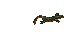 イモリ | 5–10 | 10cm |
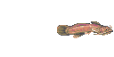 アカザ | 5–15 | 15cm |
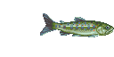 アマゴ | 10–25 | 25cm |
| 15–35 | 35cm | |
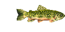 カワマス | 20–53 | 53cm |
| 20–55 | 55cm | |
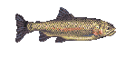 ニジマス | 20–70 | 70cm |
マップごとのサイズ上限はありません。魚は、そのマップの宿で1泊するごとに1cm育ちます。新しい魚は最小サイズの半分から始まります。 ROMで確認済み
このエリアで売っている中で出だしがいちばん易しくなる竿と針での、実際の大きさでの出だしの難しさです（0が易しい、6が難しい）。各行でいちばん小さい数字に印を付けています。
| 魚 | ウキ＋エサ | オモリ＋エサ | 投げ竿 | ルアー | フライ | いちばん易しい |
|---|---|---|---|---|---|---|
| イモリ | 3.0 ✓ | — | — | — | 3.0 ✓ | ウキ＋エサ, フライ |
| アカザ | 2.0 ✓ | — | — | — | 2.0 ✓ | ウキ＋エサ, フライ |
| アマゴ | 1.8 | — | — | 1.0 ✓ | 1.8 | ルアー |
| 0.0 ✓ | — | — | 0.1 | 0.1 | ウキ＋エサ | |
| カワマス | 2.1 | — | — | 2.0 ✓ | 2.1 | ルアー |
| 1.6 ✓ | — | — | 2.0 | 2.1 | ウキ＋エサ | |
| ニジマス | 3.4 | — | — | 3.0 ✓ | 3.4 | ルアー |
合計825円
合計415円
選んだ基準：このエリアの魚をいちばん多く釣れる（7種中7種）、次に出だしの平均がいちばん易しい（2.25）、次に安い。
| 魚 | 実際の大きさ（cm） | 竿 | 針 | エサ | 出だし（0が易しい） |
|---|---|---|---|---|---|
| イモリ | 5–10 | ヤマベ竿6本継3.9m (中) | 3.0 | ||
| アカザ | 5–15 | ヤマベ竿6本継3.9m (中) | 2.0 | ||
| アマゴ | 10–25 | ヤマベ竿6本継3.9m (中) | 1.8 | ||
| 15–35 | 0.0 | ||||
| カワマス | 20–53 | ヤマベ竿6本継3.9m (中) | 2.1 | ||
| 20–55 | ヤマベ竿6本継3.9m (中) | 1.6 | |||
| ニジマス | 20–70 | ヤマベ竿6本継3.9m (中) | 3.4 |
| 竿 | 重さ | 価格 | 判定 | 理由 |
|---|---|---|---|---|
| ヤマベ竿6本継3.9m | 中 | ¥350 | 買う | いちばん易しいセットの一部; 中の竿：中型は変わらず、小型と大型は難しくなる ROMで確認済み |
| 中 | ¥750 | 買う | いちばん易しいセットの一部; ヤマメの名前つき：竿の大きさによる不利なし ROMで確認済み | |
| 清流カーボン竿5.3m | 中 | ¥500 | 任意 | 中の竿：中型は変わらず、小型と大型は難しくなる ROMで確認済み |
| 針 | 価格 | 判定 | 理由 |
|---|---|---|---|
| ¥15 | 買う | いちばん易しいセットの一部; 小の針：15cm以下が易しい ROMで確認済み | |
| ¥25 | 任意 | 中の針：16〜35cmが易しい ROMで確認済み | |
| ¥25 | 買う | いちばん易しいセットの一部; イワナの名前つき：1段階易しい ROMで確認済み | |
| ¥25 | 買う | ヤマメの名前つき：1段階易しい ROMで確認済み |
| エサ | 価格 | 判定 | 理由 |
|---|---|---|---|
| ¥25 | 任意 | ここの魚で食うのは7種中7種 ROMで確認済み | |
| ¥20 | 買う | いちばん易しいセットの一部; ここの魚で食うのは7種中7種 ROMで確認済み | |
| ¥5 | 任意 | ここの魚で食うのは7種中5種 ROMで確認済み | |
| ドバミミズ | ¥40 | 任意 | ここの魚で食うのは7種中5種 ROMで確認済み |
| ¥20 | 任意 | ここの魚で食うのは7種中5種 ROMで確認済み | |
| 昆虫 | ¥25 | 任意 | ここの魚で食うのは7種中5種 ROMで確認済み |
| ¥40 | 任意 | ここの魚で食うのは7種中3種 ROMで確認済み | |
| サシ | ¥10 | 任意 | ここの魚で食うのは7種中2種 ROMで確認済み |
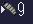 ブドウムシ | ¥35 | 任意 | ここの魚で食うのは7種中2種 ROMで確認済み |
| ウキかオモリ | 価格 | 判定 | 理由 |
|---|---|---|---|
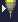 どんぐりウキ | ¥50 | 見送る | ファイトに影響なし。いちばん安いもので十分 ROMで確認済み |
| 棒ウキ | ¥30 | 買う | ファイトに影響なし。いちばん安いもので十分 ROMで確認済み |
このエリアの店にはオモリがありません。エリア4から売っています。（オモリ＋エサ）
このエリアの店にはオモリがありません。エリア4から売っています。（投げ竿）
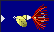
スピナー ¥20合計620円
合計520円
選んだ基準：このエリアの魚をいちばん多く釣れる（7種中5種）、次に出だしの平均がいちばん易しい（1.88）、次に安い。
| 魚 | 実際の大きさ（cm） | 竿 | 針 | ルアー | 出だし（0が易しい） |
|---|---|---|---|---|---|
| アマゴ | 10–25 | — | スピナー | 1.0 | |
| 15–35 | — | スピナー | 0.1 | ||
| カワマス | 20–53 | — | 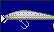 シャローライナー | 2.0 | |
| 20–55 | — | シャローライナー | 2.0 | ||
| ニジマス | 20–70 | — | シャローライナー | 3.0 |
| 竿 | 重さ | 価格 | 判定 | 理由 |
|---|---|---|---|---|
| 軽い | ¥500 | 買う | いちばん易しいセットの一部; 軽い竿：小さい魚の出だしが易しくなる ROMで確認済み | |
| 中 | ¥600 | 買う | いちばん易しいセットの一部; 中の竿：中型は変わらず、小型と大型は難しくなる ROMで確認済み |
| ルアー | 価格 | 判定 | 理由 |
|---|---|---|---|
| ¥25 | 任意 | 沈むタイプ：大物が食う テストで確認済み | |
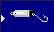 スプーン | ¥25 | 任意 | 沈むタイプ：大物が食う テストで確認済み |
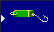 スプーン | ¥25 | 任意 | 沈むタイプ：大物が食う テストで確認済み |
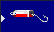 スプーン | ¥25 | 任意 | 沈むタイプ：大物が食う テストで確認済み |
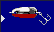 スプーン | ¥32 | 任意 | 沈むタイプ：大物が食う テストで確認済み |
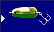 スプーン | ¥35 | 任意 | 沈むタイプ：大物が食う テストで確認済み |
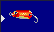 スプーン | ¥35 | 任意 | 沈むタイプ：大物が食う テストで確認済み |
| スプーン | ¥35 | 任意 | 沈むタイプ：大物が食う テストで確認済み |
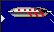 スプーン | ¥40 | 任意 | 沈むタイプ：大物が食う テストで確認済み |
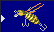 トップウォータ | ¥40 | 任意 | 水面系：大物は食わなかった（小さい魚にはよい） テストで確認済み |
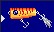 トップウォータ | ¥50 | 任意 | 水面系：大物は食わなかった（小さい魚にはよい） テストで確認済み |
| シャローライナー | ¥50 | 任意 | 水面系：大物は食わなかった（小さい魚にはよい） テストで確認済み |
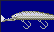 ディープ | ¥60 | 任意 | 水面系：大物は食わなかった（小さい魚にはよい） テストで確認済み |
| スピナー | ¥20 | 買う | いちばん易しいセットの一部; 沈むタイプ：大物が食う テストで確認済み |
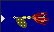 スピナー | ¥25 | 任意 | 沈むタイプ：大物が食う テストで確認済み |
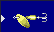 スピナー | ¥25 | 任意 | 沈むタイプ：大物が食う テストで確認済み |
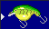 シャローライナー | ¥28 | 任意 | 水面系：大物は食わなかった（小さい魚にはよい） テストで確認済み |
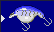 シャローライナー | ¥30 | 任意 | 水面系：大物は食わなかった（小さい魚にはよい） テストで確認済み |
| ¥30 | 任意 | このタイプは大物で未テスト 未確認 | |
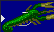 ソフト・クロー | ¥100 | 任意 | 沈むタイプ：大物が食う テストで確認済み |
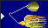 スピナーベイト | ¥60 | 任意 | 沈むタイプ：大物が食う テストで確認済み |
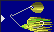 スピナーベイト | ¥60 | 任意 | 沈むタイプ：大物が食う テストで確認済み |
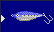 ジグ | ¥25 | 任意 | 沈むタイプ：大物が食う テストで確認済み |
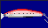 ジグ | ¥70 | 任意 | 沈むタイプ：大物が食う テストで確認済み |
合計415円
合計405円
選んだ基準：このエリアの魚をいちばん多く釣れる（7種中7種）、次に出だしの平均がいちばん易しい（2.34）、次に安い。
| 魚 | 実際の大きさ（cm） | 竿 | 針 | フライボディ | 出だし（0が易しい） |
|---|---|---|---|---|---|
| イモリ | 5–10 | — | 3.0 | ||
| アカザ | 5–15 | — | 2.0 | ||
| アマゴ | 10–25 | — | 1.8 | ||
| 15–35 | — | 0.1 | |||
| カワマス | 20–53 | — | 2.1 | ||
| 20–55 | — | 2.1 | |||
| ニジマス | 20–70 | — | 3.4 |
| 竿 | 重さ | 価格 | 判定 | 理由 |
|---|---|---|---|---|
| 中 | ¥400 | 買う | いちばん易しいセットの一部; 中の竿：中型は変わらず、小型と大型は難しくなる ROMで確認済み | |
| 重い | ¥450 | 見送る | 重い竿：出だしは決して易しくならない（遠くへ投げる、走る魚を長く放っておける） ROMで確認済み |
| フライボディ | 価格 | 判定 | 理由 |
|---|---|---|---|
| ¥5 | 買う | いちばん易しいセットの一部; フライボディ：大きさ設定が段階を決める ROMで確認済み | |
| メイフライ・ドライ | ¥18 | 任意 | フライボディ：大きさ設定が段階を決める ROMで確認済み |
| ¥15 | 買う | いちばん易しいセットの一部; フライボディ：大きさ設定が段階を決める ROMで確認済み | |
| ¥5 | 任意 | フライボディ：大きさ設定が段階を決める ROMで確認済み | |
| ディプテラ・ウェット | ¥20 | 任意 | フライボディ：大きさ設定が段階を決める ROMで確認済み |
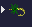 ディプテラ・ドライ | ¥25 | 任意 | フライボディ：大きさ設定が段階を決める ROMで確認済み |
| ストーンフライ・ドライ | ¥15 | 任意 | フライボディ：大きさ設定が段階を決める ROMで確認済み |
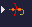 テレストリアル・アント | ¥25 | 任意 | フライボディ：大きさ設定が段階を決める ROMで確認済み |
| 魚 | 実際の大きさ（cm） | サイズMAX |
|---|---|---|
| 2–7 | 7cm | |
| カエル | 5–10 | 10cm |
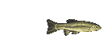 アブラハヤ | 6–13 | 13cm |
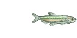 ワカサギ | 7–15 | 15cm |
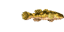 ドンコ | 12–25 | 25cm |
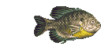 ブルーギル | 12–35 | 35cm |
| 15–45 | 45cm | |
| カワマス | 20–53 | 53cm |
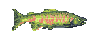 サクラマス | 30–60 | 60cm |
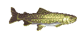 アメマス | 30–70 | 70cm |
| ニジマス | 20–70 | 70cm |
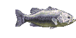 ブラックバス | 25–83 | 83cm |
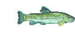 ブラウントラウト | 25–100 | 100cm 育つまで長いMAXになるには、その魚のマスが宿の夜に51〜75回選ばれる必要があります。夜の間に約30回ファイトする場合、およそ435〜640泊です。 |
マップごとのサイズ上限はありません。魚は、そのマップの宿で1泊するごとに1cm育ちます。新しい魚は最小サイズの半分から始まります。 ROMで確認済み
このエリアで売っている中で出だしがいちばん易しくなる竿と針での、実際の大きさでの出だしの難しさです（0が易しい、6が難しい）。各行でいちばん小さい数字に印を付けています。
| 魚 | ウキ＋エサ | オモリ＋エサ | 投げ竿 | ルアー | フライ | いちばん易しい |
|---|---|---|---|---|---|---|
| 1.0 ✓ | — | — | — | 1.0 ✓ | ウキ＋エサ, フライ | |
| カエル | 3.0 | — | — | 1.0 ✓ | 3.0 | ルアー |
| アブラハヤ | 1.0 | — | — | 0.0 ✓ | 1.0 | ルアー |
| ワカサギ | 1.0 ✓ | — | — | — | — | ウキ＋エサ |
| ドンコ | 0.6 ✓ | — | — | 0.7 | 0.6 ✓ | ウキ＋エサ, フライ |
| ブルーギル | 1.3 | — | — | 1.0 ✓ | 1.3 | ルアー |
| 2.4 ✓ | — | — | 2.6 | — | ウキ＋エサ | |
| カワマス | 2.1 | — | — | 2.0 ✓ | 2.1 | ルアー |
| サクラマス | 2.6 | — | — | 2.0 ✓ | 2.6 | ルアー |
| アメマス | 3.7 | — | — | 3.0 ✓ | 3.7 | ルアー |
| ニジマス | 3.4 | — | — | 3.0 ✓ | 3.4 | ルアー |
| ブラックバス | 2.6 | — | — | 1.8 ✓ | 2.6 | ルアー |
| ブラウントラウト | 2.7 | — | — | 2.0 ✓ | 2.7 | ルアー |
合計390円
選んだ基準：このエリアの魚をいちばん多く釣れる（13種中11種）、次に出だしの平均がいちばん易しい（2.36）、次に安い。
| 魚 | 実際の大きさ（cm） | 竿 | 針 | エサ | 出だし（0が易しい） |
|---|---|---|---|---|---|
| 2–7 | ヤマベ竿6本継3.9m (中) | 1.0 | |||
| カエル | 5–10 | ヤマベ竿6本継3.9m (中) | 3.0 | ||
| アブラハヤ | 6–13 | ヤマベ竿6本継3.9m (中) | 1.0 | ||
| ワカサギ | 7–15 | ヤマベ竿6本継3.9m (中) | 1.0 | ||
| ドンコ | 12–25 | ヤマベ竿6本継3.9m (中) | 0.6 | ||
| ブルーギル | 12–35 | ヤマベ竿6本継3.9m (中) | 1.3 | ||
| 15–45 | ヤマベ竿6本継3.9m (中) | 2.4 | |||
| カワマス | 20–53 | ヤマベ竿6本継3.9m (中) | 2.1 | ||
| サクラマス | 30–60 | ヤマベ竿6本継3.9m (中) | 2.6 | ||
| アメマス | 30–70 | ヤマベ竿6本継3.9m (中) | 3.7 | ||
| ニジマス | 20–70 | ヤマベ竿6本継3.9m (中) | 3.4 | ||
| ブラックバス | 25–83 | ヤマベ竿6本継3.9m (中) | 2.6 | ||
| ブラウントラウト | 25–100 | ヤマベ竿6本継3.9m (中) | 2.7 |
| 竿 | 重さ | 価格 | 判定 | 理由 |
|---|---|---|---|---|
| ヤマベ竿6本継3.9m | 中 | ¥350 | 買う | いちばん易しいセットの一部; 中の竿：中型は変わらず、小型と大型は難しくなる ROMで確認済み |
| 中 | ¥750 | 任意 | 中の竿：中型は変わらず、小型と大型は難しくなる ROMで確認済み | |
| 清流カーボン竿5.3m | 中 | ¥500 | 任意 | 中の竿：中型は変わらず、小型と大型は難しくなる ROMで確認済み |
| 針 | 価格 | 判定 | 理由 |
|---|---|---|---|
| ¥25 | 任意 | 中の針：16〜35cmが易しい ROMで確認済み | |
| ¥25 | 任意 | 中の針：16〜35cmが易しい ROMで確認済み | |
| ¥20 | 任意 | 小の針：15cm以下が易しい ROMで確認済み | |
| ¥10 | 買う | いちばん易しいセットの一部; 中の針：16〜35cmが易しい ROMで確認済み |
| エサ | 価格 | 判定 | 理由 |
|---|---|---|---|
| ¥25 | 任意 | ここの魚で食うのは13種中11種 ROMで確認済み | |
| ¥20 | 買う | いちばん易しいセットの一部; ここの魚で食うのは13種中11種 ROMで確認済み | |
| ¥5 | 任意 | ここの魚で食うのは13種中10種 ROMで確認済み | |
| ドバミミズ | ¥40 | 任意 | ここの魚で食うのは13種中8種 ROMで確認済み |
| ¥20 | 任意 | ここの魚で食うのは13種中10種 ROMで確認済み | |
| 昆虫 | ¥25 | 任意 | ここの魚で食うのは13種中7種 ROMで確認済み |
| ¥40 | 任意 | ここの魚で食うのは13種中4種 ROMで確認済み | |
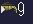 エビ | ¥35 | 任意 | ここの魚で食うのは13種中7種 ROMで確認済み |
| ¥25 | 買う | ヒメマスの名前つき：1段階易しい ROMで確認済み | |
| ¥30 | 任意 | ここの魚で食うのは13種中8種 ROMで確認済み |
| ウキかオモリ | 価格 | 判定 | 理由 |
|---|---|---|---|
| どんぐりウキ | ¥50 | 見送る | ファイトに影響なし。いちばん安いもので十分 ROMで確認済み |
| 棒ウキ | ¥30 | 見送る | ファイトに影響なし。いちばん安いもので十分 ROMで確認済み |
| ¥10 | 買う | ファイトに影響なし。いちばん安いもので十分 ROMで確認済み | |
| 流線シモリ | ¥15 | 見送る | ファイトに影響なし。いちばん安いもので十分 ROMで確認済み |
このエリアの店にはオモリがありません。エリア4から売っています。（オモリ＋エサ）
このエリアの店にはオモリがありません。エリア4から売っています。（投げ竿）
合計520円
選んだ基準：このエリアの魚をいちばん多く釣れる（13種中10種）、次に出だしの平均がいちばん易しい（3.01）、次に安い。
| 魚 | 実際の大きさ（cm） | 竿 | 針 | ルアー | 出だし（0が易しい） |
|---|---|---|---|---|---|
| カエル | 5–10 | — | 1.0 | ||
| アブラハヤ | 6–13 | — | 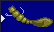 ソフト・ワーム | 0.0 | |
| ドンコ | 12–25 | — | 0.7 | ||
| ブルーギル | 12–35 | — | スピナー | 1.0 | |
| 15–45 | — | スピナー | 2.6 | ||
| カワマス | 20–53 | — | 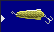 スプーン | 2.0 | |
| サクラマス | 30–60 | — | スプーン | 2.0 | |
| アメマス | 30–70 | — | スプーン | 3.0 | |
| ニジマス | 20–70 | — | スプーン | 3.0 | |
| ブラックバス | 25–83 | — | 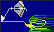 スピナーベイト | 1.8 | |
| ブラウントラウト | 25–100 | — | スプーン | 2.0 |
| 竿 | 重さ | 価格 | 判定 | 理由 |
|---|---|---|---|---|
| 軽い | ¥500 | 買う | いちばん易しいセットの一部; 軽い竿：小さい魚の出だしが易しくなる ROMで確認済み | |
| 中 | ¥600 | 任意 | 中の竿：中型は変わらず、小型と大型は難しくなる ROMで確認済み |
| ルアー | 価格 | 判定 | 理由 |
|---|---|---|---|
| スプーン | ¥32 | 任意 | 沈むタイプ：大物が食う テストで確認済み |
| ディープ | ¥60 | 任意 | 水面系：大物は食わなかった（小さい魚にはよい） テストで確認済み |
| スピナー | ¥25 | 任意 | 沈むタイプ：大物が食う テストで確認済み |
| シャローライナー | ¥28 | 任意 | 水面系：大物は食わなかった（小さい魚にはよい） テストで確認済み |
| シャローライナー | ¥30 | 任意 | 水面系：大物は食わなかった（小さい魚にはよい） テストで確認済み |
| スピナーベイト | ¥60 | 任意 | 沈むタイプ：大物が食う テストで確認済み |
| ジグ | ¥70 | 任意 | 沈むタイプ：大物が食う テストで確認済み |
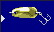 スプーン | ¥30 | 任意 | 沈むタイプ：大物が食う テストで確認済み |
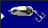 スプーン | ¥30 | 任意 | 沈むタイプ：大物が食う テストで確認済み |
| スプーン | ¥30 | 任意 | 沈むタイプ：大物が食う テストで確認済み |
| スプーン | ¥25 | 任意 | 沈むタイプ：大物が食う テストで確認済み |
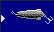 スプーン | ¥25 | 任意 | 沈むタイプ：大物が食う テストで確認済み |
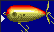 トップウォータ | ¥150 | 任意 | 水面系：大物は食わなかった（小さい魚にはよい） テストで確認済み |
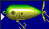 トップウォータ | ¥160 | 任意 | 水面系：大物は食わなかった（小さい魚にはよい） テストで確認済み |
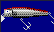 トップウォータ | ¥265 | 任意 | 水面系：大物は食わなかった（小さい魚にはよい） テストで確認済み |
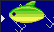 シャローライナー | ¥360 | 任意 | 水面系：大物は食わなかった（小さい魚にはよい） テストで確認済み |
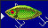 シンキングバイブ | ¥500 | 任意 | 沈むタイプ：大物が食う テストで確認済み |
| トップウォータ | ¥30 | 任意 | 水面系：大物は食わなかった（小さい魚にはよい） テストで確認済み |
| スピナーベイト | ¥35 | 買う | ブラックバスの名前つき：1段階易しい テストで確認済み |
| シンキング | ¥45 | 任意 | このタイプは大物で未テスト 未確認 |
| ¥20 | 買う | いちばん易しいセットの一部; このタイプは大物で未テスト 未確認 | |
| ソフト・カエル | ¥70 | 任意 | 水面系：大物は食わなかった（小さい魚にはよい） テストで確認済み |
| ソフト・ワーム | ¥35 | 任意 | このタイプは大物で未テスト 未確認 |
| スピナー | ¥26 | 任意 | 沈むタイプ：大物が食う テストで確認済み |
合計420円
合計410円
選んだ基準：このエリアの魚をいちばん多く釣れる（13種中11種）、次に出だしの平均がいちばん易しい（2.36）、次に安い。
| 魚 | 実際の大きさ（cm） | 竿 | 針 | フライボディ | 出だし（0が易しい） |
|---|---|---|---|---|---|
| 2–7 | — | 1.0 | |||
| カエル | 5–10 | — | 3.0 | ||
| アブラハヤ | 6–13 | — | 1.0 | ||
| ドンコ | 12–25 | — | カディス・ウェット | 0.6 | |
| ブルーギル | 12–35 | — | カディス・ドライ | 1.3 | |
| カワマス | 20–53 | — | カディス・ドライ | 2.1 | |
| サクラマス | 30–60 | — | カディス・ドライ | 2.6 | |
| アメマス | 30–70 | — | カディス・ドライ | 3.7 | |
| ニジマス | 20–70 | — | カディス・ウェット | 3.4 | |
| ブラックバス | 25–83 | — | カディス・ドライ | 2.6 | |
| ブラウントラウト | 25–100 | — | カディス・ウェット | 2.7 |
| 竿 | 重さ | 価格 | 判定 | 理由 |
|---|---|---|---|---|
| 中 | ¥400 | 買う | いちばん易しいセットの一部; 中の竿：中型は変わらず、小型と大型は難しくなる ROMで確認済み | |
| 重い | ¥450 | 見送る | 重い竿：出だしは決して易しくならない（遠くへ投げる、走る魚を長く放っておける） ROMで確認済み |
| フライボディ | 価格 | 判定 | 理由 |
|---|---|---|---|
| ¥10 | 買う | いちばん易しいセットの一部; フライボディ：大きさ設定が段階を決める ROMで確認済み | |
| メイフライ・ドライ | ¥20 | 任意 | フライボディ：大きさ設定が段階を決める ROMで確認済み |
| カディス・ウェット | ¥20 | 買う | いちばん易しいセットの一部; フライボディ：大きさ設定が段階を決める ROMで確認済み |
| カディス・ドライ | ¥7 | 任意 | フライボディ：大きさ設定が段階を決める ROMで確認済み |
| ディプテラ・ウェット | ¥25 | 任意 | フライボディ：大きさ設定が段階を決める ROMで確認済み |
| ディプテラ・ドライ | ¥35 | 任意 | フライボディ：大きさ設定が段階を決める ROMで確認済み |
| ストーンフライ・ウェット | ¥35 | 任意 | フライボディ：大きさ設定が段階を決める ROMで確認済み |
| テレストリアル・ビートル | ¥50 | 任意 | フライボディ：大きさ設定が段階を決める ROMで確認済み |
| 魚 | 実際の大きさ（cm） | サイズMAX |
|---|---|---|
| ザリガニ | 2–5 | 5cm |
| アカザ | 5–15 | 15cm |
| シマドジョウ | 7–15 | 15cm |
| カジカ | 7–17 | 17cm |
| ヤマノカミ | 8–17 | 17cm |
| オイカワ | 7–18 | 18cm |
| カワムツ | 7–20 | 20cm |
| カマツカ | 10–20 | 20cm |
| ドンコ | 12–25 | 25cm |
| 15–30 | 30cm | |
| ハス | 15–35 | 35cm |
| ウグイ | 15–45 | 45cm |
| ニゴイ | 25–50 | 50cm |
| サツキマス | 12–50 | 50cm |
| ニジマス | 20–70 | 70cm |
| ブラウントラウト | 25–100 | 100cm 育つまで長いMAXになるには、その魚のマスが宿の夜に51〜75回選ばれる必要があります。夜の間に約30回ファイトする場合、およそ435〜640泊です。 |
マップごとのサイズ上限はありません。魚は、そのマップの宿で1泊するごとに1cm育ちます。新しい魚は最小サイズの半分から始まります。 ROMで確認済み
このエリアで売っている中で出だしがいちばん易しくなる竿と針での、実際の大きさでの出だしの難しさです（0が易しい、6が難しい）。各行でいちばん小さい数字に印を付けています。
| 魚 | ウキ＋エサ | オモリ＋エサ | 投げ竿 | ルアー | フライ | いちばん易しい |
|---|---|---|---|---|---|---|
| ザリガニ | 3.0 ✓ | — | — | — | — | ウキ＋エサ |
| アカザ | 2.0 ✓ | — | — | — | 2.0 ✓ | ウキ＋エサ, フライ |
| シマドジョウ | 1.0 ✓ | — | — | — | — | ウキ＋エサ |
| カジカ | 1.0 | — | — | 0.2 ✓ | 1.0 | ルアー |
| ヤマノカミ | 1.0 | — | — | 0.2 ✓ | 1.0 | ルアー |
| オイカワ | 1.0 | — | — | 0.3 ✓ | 1.0 | ルアー |
| カワムツ | 1.0 ✓ | — | — | — | 1.0 ✓ | ウキ＋エサ, フライ |
| カマツカ | 1.0 ✓ | — | — | — | 1.0 ✓ | ウキ＋エサ, フライ |
| ドンコ | 0.6 ✓ | — | — | 0.7 | 0.6 ✓ | ウキ＋エサ, フライ |
| 1.0 ✓ | — | — | — | 1.1 | ウキ＋エサ | |
| ハス | 1.1 | — | — | 1.0 ✓ | — | ルアー |
| ウグイ | 0.7 ✓ | — | — | 0.7 ✓ | 0.7 ✓ | ウキ＋エサ, ルアー, フライ |
| ニゴイ | 2.1 | — | — | 2.0 ✓ | 2.1 | ルアー |
| サツキマス | 2.0 | — | — | 1.8 ✓ | 2.0 | ルアー |
| ニジマス | 3.4 | — | — | 3.0 ✓ | 3.4 | ルアー |
| ブラウントラウト | 2.7 | — | — | 2.0 ✓ | 2.7 | ルアー |
合計1,580円
合計580円
選んだ基準：このエリアの魚をいちばん多く釣れる（16種中13種）、次に出だしの平均がいちばん易しい（1.74）、次に安い。
| 魚 | 実際の大きさ（cm） | 竿 | 針 | エサ | 出だし（0が易しい） |
|---|---|---|---|---|---|
| ザリガニ | 2–5 | 清流カーボン竿5.3m (中) | サシ | 3.0 | |
| アカザ | 5–15 | 清流カーボン竿5.3m (中) | 2.0 | ||
| シマドジョウ | 7–15 | 清流カーボン竿5.3m (中) | 1.0 | ||
| カジカ | 7–17 | 清流カーボン竿5.3m (中) | 1.0 | ||
| ヤマノカミ | 8–17 | 清流カーボン竿5.3m (中) | 1.0 | ||
| オイカワ | 7–18 | 清流カーボン竿5.3m (中) | サシ | 1.0 | |
| カワムツ | 7–20 | 清流カーボン竿5.3m (中) | 1.0 | ||
| カマツカ | 10–20 | 清流カーボン竿5.3m (中) | 1.0 | ||
| ドンコ | 12–25 | 清流カーボン竿5.3m (中) | 0.6 | ||
| 15–30 | 1.0 | ||||
| ハス | 15–35 | 清流カーボン竿5.3m (中) | 1.1 | ||
| ウグイ | 15–45 | 清流カーボン竿5.3m (中) | 0.7 | ||
| ニゴイ | 25–50 | 清流カーボン竿5.3m (中) | 2.1 | ||
| サツキマス | 12–50 | 清流カーボン竿5.3m (中) | 2.0 | ||
| ニジマス | 20–70 | 清流カーボン竿5.3m (中) | 3.4 | ||
| ブラウントラウト | 25–100 | 清流カーボン竿5.3m (中) | 2.7 |
| 竿 | 重さ | 価格 | 判定 | 理由 |
|---|---|---|---|---|
| 清流カーボン竿5.3m | 中 | ¥500 | 買う | いちばん易しいセットの一部; 中の竿：中型は変わらず、小型と大型は難しくなる ROMで確認済み |
| 中 | ¥1,500 | 買う | いちばん易しいセットの一部; アユの名前つき：竿の大きさによる不利なし ROMで確認済み | |
| アユ竿カーボン10m | 中 | ¥1,500 | 買う | アユの名前つき：竿の大きさによる不利なし ROMで確認済み |
| 針 | 価格 | 判定 | 理由 |
|---|---|---|---|
| ¥15 | 任意 | 小の針：15cm以下が易しい ROMで確認済み | |
| ¥25 | 任意 | 中の針：16〜35cmが易しい ROMで確認済み | |
| ¥10 | 買う | いちばん易しいセットの一部; 中の針：16〜35cmが易しい ROMで確認済み | |
| ¥10 | 買う | アユの名前つき：1段階易しい ROMで確認済み |
| エサ | 価格 | 判定 | 理由 |
|---|---|---|---|
| ¥25 | 任意 | ここの魚で食うのは16種中13種 ROMで確認済み | |
| ¥20 | 買う | いちばん易しいセットの一部; ここの魚で食うのは16種中13種 ROMで確認済み | |
| ¥5 | 任意 | ここの魚で食うのは16種中9種 ROMで確認済み | |
| ¥20 | 任意 | ここの魚で食うのは16種中9種 ROMで確認済み | |
| 昆虫 | ¥25 | 任意 | ここの魚で食うのは16種中5種 ROMで確認済み |
| ¥40 | 任意 | ここの魚で食うのは16種中3種 ROMで確認済み | |
| サシ | ¥10 | 任意 | ここの魚で食うのは16種中6種 ROMで確認済み |
| ハチの子 | ¥35 | 任意 | ここの魚で食うのは16種中6種 ROMで確認済み |
| アカムシ | ¥15 | 任意 | ここの魚で食うのは16種中5種 ROMで確認済み |
| ドジョウ | ¥20 | 任意 | ここの魚で食うのは16種中5種 ROMで確認済み |
| おとりアユ | ¥45 | 買う | アユの名前つき：1段階易しい ROMで確認済み |
| ウキかオモリ | 価格 | 判定 | 理由 |
|---|---|---|---|
| どんぐりウキ | ¥50 | 買う | ファイトに影響なし。いちばん安いもので十分 ROMで確認済み |
| ¥100 | 見送る | ファイトに影響なし。いちばん安いもので十分 ROMで確認済み |
このエリアの店にはオモリがありません。エリア4から売っています。（オモリ＋エサ）
このエリアの店にはオモリがありません。エリア4から売っています。（投げ竿）
合計520円
選んだ基準：このエリアの魚をいちばん多く釣れる（16種中9種）、次に出だしの平均がいちばん易しい（2.05）、次に安い。
| 魚 | 実際の大きさ（cm） | 竿 | 針 | ルアー | 出だし（0が易しい） |
|---|---|---|---|---|---|
| カジカ | 7–17 | — | 0.2 | ||
| ヤマノカミ | 8–17 | — | 0.2 | ||
| オイカワ | 7–18 | — | ソフト・ワーム | 0.3 | |
| ドンコ | 12–25 | — | 0.7 | ||
| ハス | 15–35 | — | ジグ | 1.0 | |
| ウグイ | 15–45 | — | ジグ | 0.7 | |
| ニゴイ | 25–50 | — | スプーン | 2.0 | |
| サツキマス | 12–50 | — | ソフト・ワーム | 1.8 | |
| ニジマス | 20–70 | — | スプーン | 3.0 | |
| ブラウントラウト | 25–100 | — | スプーン | 2.0 |
| 竿 | 重さ | 価格 | 判定 | 理由 |
|---|---|---|---|---|
| 軽い | ¥500 | 買う | いちばん易しいセットの一部; 軽い竿：小さい魚の出だしが易しくなる ROMで確認済み | |
| 中 | ¥600 | 任意 | 中の竿：中型は変わらず、小型と大型は難しくなる ROMで確認済み |
| ルアー | 価格 | 判定 | 理由 |
|---|---|---|---|
| スプーン | ¥25 | 任意 | 沈むタイプ：大物が食う テストで確認済み |
| シャローライナー | ¥30 | 任意 | 水面系：大物は食わなかった（小さい魚にはよい） テストで確認済み |
| ソフト・クロー | ¥100 | 任意 | 沈むタイプ：大物が食う テストで確認済み |
| スピナーベイト | ¥60 | 任意 | 沈むタイプ：大物が食う テストで確認済み |
| スピナーベイト | ¥60 | 任意 | 沈むタイプ：大物が食う テストで確認済み |
| ジグ | ¥25 | 任意 | 沈むタイプ：大物が食う テストで確認済み |
| スプーン | ¥30 | 任意 | 沈むタイプ：大物が食う テストで確認済み |
| スプーン | ¥25 | 任意 | 沈むタイプ：大物が食う テストで確認済み |
| トップウォータ | ¥265 | 任意 | 水面系：大物は食わなかった（小さい魚にはよい） テストで確認済み |
| ¥20 | 買う | いちばん易しいセットの一部; このタイプは大物で未テスト 未確認 | |
| ソフト・ワーム | ¥35 | 任意 | このタイプは大物で未テスト 未確認 |
| スプーン | ¥36 | 任意 | 沈むタイプ：大物が食う テストで確認済み |
| スプーン | ¥38 | 任意 | 沈むタイプ：大物が食う テストで確認済み |
| トップウォータ | ¥60 | 任意 | 水面系：大物は食わなかった（小さい魚にはよい） テストで確認済み |
| スピナー | ¥28 | 任意 | 沈むタイプ：大物が食う テストで確認済み |
| スピナー | ¥35 | 任意 | 沈むタイプ：大物が食う テストで確認済み |
| シンキング | ¥25 | 任意 | このタイプは大物で未テスト 未確認 |
| ジグ | ¥25 | 任意 | 沈むタイプ：大物が食う テストで確認済み |
| ディープ | ¥32 | 任意 | 水面系：大物は食わなかった（小さい魚にはよい） テストで確認済み |
| シャローライナー | ¥60 | 任意 | 水面系：大物は食わなかった（小さい魚にはよい） テストで確認済み |
| ディープ | ¥60 | 任意 | 水面系：大物は食わなかった（小さい魚にはよい） テストで確認済み |
| トップウォータ | ¥300 | 任意 | 水面系：大物は食わなかった（小さい魚にはよい） テストで確認済み |
| トップウォータ | ¥310 | 任意 | 水面系：大物は食わなかった（小さい魚にはよい） テストで確認済み |
| トップウォータ | ¥350 | 任意 | 水面系：大物は食わなかった（小さい魚にはよい） テストで確認済み |
合計430円
合計415円
選んだ基準：このエリアの魚をいちばん多く釣れる（16種中13種）、次に出だしの平均がいちばん易しい（1.75）、次に安い。
| 魚 | 実際の大きさ（cm） | 竿 | 針 | フライボディ | 出だし（0が易しい） |
|---|---|---|---|---|---|
| アカザ | 5–15 | — | メイフライ・ウェット | 2.0 | |
| カジカ | 7–17 | — | メイフライ・ウェット | 1.0 | |
| ヤマノカミ | 8–17 | — | メイフライ・ウェット | 1.0 | |
| オイカワ | 7–18 | — | メイフライ・ウェット | 1.0 | |
| カワムツ | 7–20 | — | メイフライ・ウェット | 1.0 | |
| カマツカ | 10–20 | — | メイフライ・ウェット | 1.0 | |
| ドンコ | 12–25 | — | カディス・ウェット | 0.6 | |
| 15–30 | — | カディス・ドライ | 1.1 | ||
| ウグイ | 15–45 | — | カディス・ドライ | 0.7 | |
| ニゴイ | 25–50 | — | カディス・ドライ | 2.1 | |
| サツキマス | 12–50 | — | カディス・ドライ | 2.0 | |
| ニジマス | 20–70 | — | カディス・ウェット | 3.4 | |
| ブラウントラウト | 25–100 | — | カディス・ウェット | 2.7 |
| 竿 | 重さ | 価格 | 判定 | 理由 |
|---|---|---|---|---|
| 中 | ¥400 | 買う | いちばん易しいセットの一部; 中の竿：中型は変わらず、小型と大型は難しくなる ROMで確認済み | |
| 重い | ¥450 | 見送る | 重い竿：出だしは決して易しくならない（遠くへ投げる、走る魚を長く放っておける） ROMで確認済み |
| フライボディ | 価格 | 判定 | 理由 |
|---|---|---|---|
| メイフライ・ウェット | ¥15 | 買う | いちばん易しいセットの一部; フライボディ：大きさ設定が段階を決める ROMで確認済み |
| メイフライ・ドライ | ¥22 | 任意 | フライボディ：大きさ設定が段階を決める ROMで確認済み |
| カディス・ウェット | ¥30 | 買う | いちばん易しいセットの一部; フライボディ：大きさ設定が段階を決める ROMで確認済み |
| カディス・ドライ | ¥10 | 任意 | フライボディ：大きさ設定が段階を決める ROMで確認済み |
| ディプテラ・ウェット | ¥30 | 任意 | フライボディ：大きさ設定が段階を決める ROMで確認済み |
| ディプテラ・ドライ | ¥35 | 任意 | フライボディ：大きさ設定が段階を決める ROMで確認済み |
| ストーンフライ・ウェット | ¥35 | 任意 | フライボディ：大きさ設定が段階を決める ROMで確認済み |
| テレストリアル・ワーム | ¥50 | 任意 | フライボディ：大きさ設定が段階を決める ROMで確認済み |
| 魚 | 実際の大きさ（cm） | サイズMAX |
|---|---|---|
| 5–10 | 10cm | |
| タモロコ | 7–14 | 14cm |
| ワカサギ | 7–15 | 15cm |
| ホンモロコ | 7–17 | 17cm |
| カマツカ | 10–20 | 20cm |
| ヒガイ | 10–22 | 22cm |
| ギギ | 15–30 | 30cm |
| マブナ | 12–30 | 30cm |
| ワタカ | 15–30 | 30cm |
| 15–30 | 30cm | |
| カメ | 12–30 | 30cm |
| ハス | 15–35 | 35cm |
| ウグイ | 15–45 | 45cm |
| 17–45 | 45cm | |
| カムルチー | 40–85 | 85cm |
| ハクレン | 50–100 | 100cm |
| 30–100 | 100cm 育つまで長いMAXになるには、その魚のマスが宿の夜に41〜70回選ばれる必要があります。夜の間に約30回ファイトする場合、およそ350〜597泊です。 | |
| 30–115 | 115cm 育つまで長いMAXになるには、その魚のマスが宿の夜に56〜85回選ばれる必要があります。夜の間に約30回ファイトする場合、およそ478〜725泊です。 | |
| ライギョ | 30–121 | 121cm 育つまで長いMAXになるには、その魚のマスが宿の夜に62〜91回選ばれる必要があります。夜の間に約30回ファイトする場合、およそ529〜777泊です。 |
| アオウオ | 50–130 | 130cm |
| ウナギ | 50–130 | 130cm |
| ソウギョ | 50–140 | 140cm 育つまで長いMAXになるには、その魚のマスが宿の夜に41〜90回選ばれる必要があります。夜の間に約30回ファイトする場合、およそ350〜768泊です。 |
| コクレン | 50–160 | 160cm 育つまで長いMAXになるには、その魚のマスが宿の夜に61〜110回選ばれる必要があります。夜の間に約30回ファイトする場合、およそ521〜939泊です。 |
マップごとのサイズ上限はありません。魚は、そのマップの宿で1泊するごとに1cm育ちます。新しい魚は最小サイズの半分から始まります。 ROMで確認済み
このエリアで売っている中で出だしがいちばん易しくなる竿と針での、実際の大きさでの出だしの難しさです（0が易しい、6が難しい）。各行でいちばん小さい数字に印を付けています。
| 魚 | ウキ＋エサ | オモリ＋エサ | 投げ竿 | ルアー | フライ | いちばん易しい |
|---|---|---|---|---|---|---|
| 1.0 ✓ | — | — | — | — | ウキ＋エサ | |
| タモロコ | 1.0 ✓ | — | — | — | — | ウキ＋エサ |
| ワカサギ | 1.0 ✓ | — | — | — | — | ウキ＋エサ |
| ホンモロコ | 0.8 ✓ | — | — | — | — | ウキ＋エサ |
| カマツカ | 1.0 | 0.5 ✓ | 0.5 ✓ | — | 3.0 | オモリ＋エサ, 投げ竿 |
| ヒガイ | 1.9 | 1.0 ✓ | 1.0 ✓ | — | 3.9 | オモリ＋エサ, 投げ竿 |
| ギギ | 1.1 | 1.0 ✓ | 1.0 ✓ | 2.0 | 3.1 | オモリ＋エサ, 投げ竿 |
| マブナ | 1.4 | 1.0 ✓ | 1.0 ✓ | — | — | オモリ＋エサ, 投げ竿 |
| ワタカ | 1.1 ✓ | — | — | — | — | ウキ＋エサ |
| 1.1 ✓ | — | — | — | 3.1 | ウキ＋エサ | |
| カメ | 2.4 ✓ | — | — | 2.4 ✓ | — | ウキ＋エサ, ルアー |
| ハス | 1.1 ✓ | — | — | 1.1 ✓ | — | ウキ＋エサ, ルアー |
| ウグイ | 0.7 ✓ | — | — | 0.7 ✓ | 2.1 | ウキ＋エサ, ルアー |
| 1.0 ✓ | 1.3 | 1.3 | — | — | ウキ＋エサ | |
| カムルチー | 3.0 ✓ | 3.0 ✓ | 3.0 ✓ | 3.0 ✓ | — | ウキ＋エサ, オモリ＋エサ, 投げ竿, ルアー |
| ハクレン | 3.0 ✓ | — | — | — | — | ウキ＋エサ |
| 1.9 ✓ | 1.9 ✓ | 1.9 ✓ | 1.9 ✓ | — | ウキ＋エサ, オモリ＋エサ, 投げ竿, ルアー | |
| 2.9 ✓ | 2.9 ✓ | 2.9 ✓ | 3.9 | — | ウキ＋エサ, オモリ＋エサ, 投げ竿 | |
| ライギョ | 2.0 ✓ | 2.0 ✓ | 2.0 ✓ | 2.0 ✓ | — | ウキ＋エサ, オモリ＋エサ, 投げ竿, ルアー |
| アオウオ | 3.0 ✓ | 3.0 ✓ | 3.0 ✓ | — | 4.0 | ウキ＋エサ, オモリ＋エサ, 投げ竿 |
| ウナギ | 3.0 ✓ | 3.0 ✓ | 3.0 ✓ | 4.0 | — | ウキ＋エサ, オモリ＋エサ, 投げ竿 |
| ソウギョ | 3.0 ✓ | — | — | — | — | ウキ＋エサ |
| コクレン | 3.0 ✓ | — | — | 5.0 | — | ウキ＋エサ |
合計245円
合計240円
選んだ基準：このエリアの魚をいちばん多く釣れる（23種中16種）、次に出だしの平均がいちばん易しい（2.14）、次に安い。
| 魚 | 実際の大きさ（cm） | 竿 | 針 | エサ | 出だし（0が易しい） |
|---|---|---|---|---|---|
| 5–10 | 1.0 | ||||
| タモロコ | 7–14 | アカムシ | 1.0 | ||
| ワカサギ | 7–15 | アカムシ | 1.0 | ||
| ホンモロコ | 7–17 | 0.8 | |||
| カマツカ | 10–20 | 1.0 | |||
| ヒガイ | 10–22 | 1.9 | |||
| ギギ | 15–30 | 1.1 | |||
| マブナ | 12–30 | 1.4 | |||
| ワタカ | 15–30 | 1.1 | |||
| 15–30 | アユ竿カーボン10m (中) | 1.1 | |||
| カメ | 12–30 | 2.4 | |||
| ハス | 15–35 | 1.1 | |||
| ウグイ | 15–45 | 0.7 | |||
| 17–45 | 1.0 | ||||
| カムルチー | 40–85 | 3.0 | |||
| ハクレン | 50–100 | 3.0 | |||
| 30–100 | 1.9 | ||||
| 30–115 | 2.9 | ||||
| ライギョ | 30–121 | 2.0 | |||
| アオウオ | 50–130 | 3.0 | |||
| ウナギ | 50–130 | 3.0 | |||
| ソウギョ | 50–140 | 3.0 | |||
| コクレン | 50–160 | 3.0 |
| 竿 | 重さ | 価格 | 判定 | 理由 |
|---|---|---|---|---|
| ヤマベ竿6本継3.9m | 中 | ¥350 | 任意 | 中の竿：中型は変わらず、小型と大型は難しくなる ROMで確認済み |
| アユ竿カーボン10m | 中 | ¥1,500 | 買う | アユの名前つき：竿の大きさによる不利なし ROMで確認済み |
| 中 | ¥200 | 買う | いちばん易しいセットの一部; ヘラブナの名前つき：竿の大きさによる不利なし ROMで確認済み | |
| 中 | ¥2,000 | 買う | ヘラブナの名前つき：竿の大きさによる不利なし ROMで確認済み |
| 針 | 価格 | 判定 | 理由 |
|---|---|---|---|
| ¥25 | 買う | いちばん易しいセットの一部; 中の針：16〜35cmが易しい ROMで確認済み | |
| ¥12 | 買う | タナゴの名前つき：1段階易しい ROMで確認済み | |
| ¥35 | 買う | コイの名前つき：1段階易しい ROMで確認済み | |
| ¥30 | 買う | いちばん易しいセットの一部; ヘラブナの名前つき：1段階易しい ROMで確認済み |
| エサ | 価格 | 判定 | 理由 |
|---|---|---|---|
| ¥25 | 任意 | ここの魚で食うのは23種中6種 ROMで確認済み | |
| ¥5 | 買う | いちばん易しいセットの一部; ここの魚で食うのは23種中16種 ROMで確認済み | |
| ドバミミズ | ¥40 | 任意 | ここの魚で食うのは23種中7種 ROMで確認済み |
| ¥20 | 任意 | ここの魚で食うのは23種中8種 ROMで確認済み | |
| エビ | ¥35 | 任意 | ここの魚で食うのは23種中8種 ROMで確認済み |
| ¥30 | 買う | ナマズの名前つき：1段階易しい ROMで確認済み | |
| アカムシ | ¥15 | 任意 | ここの魚で食うのは23種中10種 ROMで確認済み |
| ¥25 | 買う | ヘラブナの名前つき：1段階易しい ROMで確認済み | |
| ¥25 | 買う | コイの名前つき：1段階易しい ROMで確認済み | |
| 貝のむきみ | ¥40 | 任意 | ここの魚で食うのは23種中7種 ROMで確認済み |
| ウキかオモリ | 価格 | 判定 | 理由 |
|---|---|---|---|
| 棒ウキ | ¥30 | 見送る | ファイトに影響なし。いちばん安いもので十分 ROMで確認済み |
| ¥10 | 買う | ファイトに影響なし。いちばん安いもので十分 ROMで確認済み | |
| ¥250 | 見送る | ファイトに影響なし。いちばん安いもので十分 ROMで確認済み |
合計365円
合計355円
選んだ基準：このエリアの魚をいちばん多く釣れる（23種中9種）、次に出だしの平均がいちばん易しい（2.21）、次に安い。
| 魚 | 実際の大きさ（cm） | 竿 | 針 | エサ | 出だし（0が易しい） |
|---|---|---|---|---|---|
| カマツカ | 10–20 | 0.5 | |||
| ヒガイ | 10–22 | 1.0 | |||
| ギギ | 15–30 | 1.0 | |||
| マブナ | 12–30 | 1.0 | |||
| 17–45 | 1.3 | ||||
| カムルチー | 40–85 | 3.0 | |||
| 30–100 | 1.9 | ||||
| 30–115 | 2.9 | ||||
| ライギョ | 30–121 | 2.0 | |||
| アオウオ | 50–130 | 3.0 | |||
| ウナギ | 50–130 | 3.0 |
| 竿 | 重さ | 価格 | 判定 | 理由 |
|---|---|---|---|---|
| 軽い | ¥250 | 買う | いちばん易しいセットの一部; 軽い竿：小さい魚の出だしが易しくなる ROMで確認済み | |
| 投げ竿中 | 中 | ¥600 | 任意 | 中の竿：中型は変わらず、小型と大型は難しくなる ROMで確認済み |
| 針 | 価格 | 判定 | 理由 |
|---|---|---|---|
| ¥25 | 買う | いちばん易しいセットの一部; 中の針：16〜35cmが易しい ROMで確認済み | |
| ¥12 | 買う | タナゴの名前つき：1段階易しい ROMで確認済み | |
| ¥35 | 買う | いちばん易しいセットの一部; コイの名前つき：1段階易しい ROMで確認済み | |
| ¥30 | 買う | ヘラブナの名前つき：1段階易しい ROMで確認済み |
| エサ | 価格 | 判定 | 理由 |
|---|---|---|---|
| ¥25 | 任意 | ここの魚で食うのは23種中4種 ROMで確認済み | |
| ¥5 | 買う | いちばん易しいセットの一部; ここの魚で食うのは23種中9種 ROMで確認済み | |
| ドバミミズ | ¥40 | 任意 | ここの魚で食うのは23種中4種 ROMで確認済み |
| ¥20 | 任意 | ここの魚で食うのは23種中5種 ROMで確認済み | |
| エビ | ¥35 | 任意 | ここの魚で食うのは23種中5種 ROMで確認済み |
| ¥30 | 買う | ナマズの名前つき：1段階易しい ROMで確認済み | |
| アカムシ | ¥15 | 任意 | ここの魚で食うのは23種中4種 ROMで確認済み |
| ¥25 | 買う | ヘラブナの名前つき：1段階易しい ROMで確認済み | |
| ¥25 | 買う | コイの名前つき：1段階易しい ROMで確認済み | |
| 貝のむきみ | ¥40 | 任意 | ここの魚で食うのは23種中5種 ROMで確認済み |
| ウキかオモリ | 価格 | 判定 | 理由 |
|---|---|---|---|
| ¥75 | 買う | ファイトに影響なし。いちばん安いもので十分 ROMで確認済み |
合計365円
合計355円
選んだ基準：このエリアの魚をいちばん多く釣れる（23種中9種）、次に出だしの平均がいちばん易しい（2.21）、次に安い。
| 魚 | 実際の大きさ（cm） | 竿 | 針 | エサ | 出だし（0が易しい） |
|---|---|---|---|---|---|
| カマツカ | 10–20 | 0.5 | |||
| ヒガイ | 10–22 | 1.0 | |||
| ギギ | 15–30 | 1.0 | |||
| マブナ | 12–30 | 1.0 | |||
| 17–45 | 1.3 | ||||
| カムルチー | 40–85 | 3.0 | |||
| 30–100 | 1.9 | ||||
| 30–115 | 2.9 | ||||
| ライギョ | 30–121 | 2.0 | |||
| アオウオ | 50–130 | 3.0 | |||
| ウナギ | 50–130 | 3.0 |
| 竿 | 重さ | 価格 | 判定 | 理由 |
|---|---|---|---|---|
| 軽い | ¥250 | 買う | いちばん易しいセットの一部; 軽い竿：小さい魚の出だしが易しくなる ROMで確認済み | |
| 投げ竿中 | 中 | ¥600 | 任意 | 中の竿：中型は変わらず、小型と大型は難しくなる ROMで確認済み |
| 針 | 価格 | 判定 | 理由 |
|---|---|---|---|
| ¥25 | 買う | いちばん易しいセットの一部; 中の針：16〜35cmが易しい ROMで確認済み | |
| ¥12 | 買う | タナゴの名前つき：1段階易しい ROMで確認済み | |
| ¥35 | 買う | いちばん易しいセットの一部; コイの名前つき：1段階易しい ROMで確認済み | |
| ¥30 | 買う | ヘラブナの名前つき：1段階易しい ROMで確認済み |
| エサ | 価格 | 判定 | 理由 |
|---|---|---|---|
| ¥25 | 任意 | ここの魚で食うのは23種中4種 ROMで確認済み | |
| ¥5 | 買う | いちばん易しいセットの一部; ここの魚で食うのは23種中9種 ROMで確認済み | |
| ドバミミズ | ¥40 | 任意 | ここの魚で食うのは23種中4種 ROMで確認済み |
| ¥20 | 任意 | ここの魚で食うのは23種中5種 ROMで確認済み | |
| エビ | ¥35 | 任意 | ここの魚で食うのは23種中5種 ROMで確認済み |
| ¥30 | 買う | ナマズの名前つき：1段階易しい ROMで確認済み | |
| アカムシ | ¥15 | 任意 | ここの魚で食うのは23種中4種 ROMで確認済み |
| ¥25 | 買う | ヘラブナの名前つき：1段階易しい ROMで確認済み | |
| ¥25 | 買う | コイの名前つき：1段階易しい ROMで確認済み | |
| 貝のむきみ | ¥40 | 任意 | ここの魚で食うのは23種中5種 ROMで確認済み |
| ウキかオモリ | 価格 | 判定 | 理由 |
|---|---|---|---|
| ¥75 | 買う | ファイトに影響なし。いちばん安いもので十分 ROMで確認済み |
合計620円
選んだ基準：このエリアの魚をいちばん多く釣れる（23種中8種）、次に出だしの平均がいちばん易しい（3.54）、次に安い。
| 魚 | 実際の大きさ（cm） | 竿 | 針 | ルアー | 出だし（0が易しい） |
|---|---|---|---|---|---|
| ギギ | 15–30 | — | 2.0 | ||
| カメ | 12–30 | — | 2.4 | ||
| ハス | 15–35 | — | ジグ | 1.1 | |
| ウグイ | 15–45 | — | ジグ | 0.7 | |
| カムルチー | 40–85 | — | スプーン | 3.0 | |
| 30–100 | — | ソフト・赤ガエル | 1.9 | ||
| 30–115 | — | 3.9 | |||
| ライギョ | 30–121 | — | スプーン | 2.0 | |
| ウナギ | 50–130 | — | 4.0 | ||
| コクレン | 50–160 | — | 5.0 |
| 竿 | 重さ | 価格 | 判定 | 理由 |
|---|---|---|---|---|
| 中 | ¥600 | 買う | いちばん易しいセットの一部; 中の竿：中型は変わらず、小型と大型は難しくなる ROMで確認済み | |
| 重い | ¥650 | 買う | ナマズの名前つき：竿の大きさによる不利なし ROMで確認済み |
| ルアー | 価格 | 判定 | 理由 |
|---|---|---|---|
| スプーン | ¥35 | 任意 | 沈むタイプ：大物が食う テストで確認済み |
| ¥30 | 任意 | このタイプは大物で未テスト 未確認 | |
| トップウォータ | ¥160 | 任意 | 水面系：大物は食わなかった（小さい魚にはよい） テストで確認済み |
| トップウォータ | ¥265 | 任意 | 水面系：大物は食わなかった（小さい魚にはよい） テストで確認済み |
| シャローライナー | ¥360 | 任意 | 水面系：大物は食わなかった（小さい魚にはよい） テストで確認済み |
| トップウォータ | ¥30 | 任意 | 水面系：大物は食わなかった（小さい魚にはよい） テストで確認済み |
| スピナーベイト | ¥35 | 任意 | 沈むタイプ：大物が食う テストで確認済み |
| シンキング | ¥45 | 任意 | このタイプは大物で未テスト 未確認 |
| ¥20 | 買う | いちばん易しいセットの一部; このタイプは大物で未テスト 未確認 | |
| スプーン | ¥38 | 任意 | 沈むタイプ：大物が食う テストで確認済み |
| ジグ | ¥25 | 任意 | 沈むタイプ：大物が食う テストで確認済み |
| トップウォータ | ¥300 | 任意 | 水面系：大物は食わなかった（小さい魚にはよい） テストで確認済み |
| シャローライナー | ¥36 | 任意 | 水面系：大物は食わなかった（小さい魚にはよい） テストで確認済み |
| スプーン | ¥38 | 任意 | 沈むタイプ：大物が食う テストで確認済み |
| スプーン | ¥26 | 任意 | 沈むタイプ：大物が食う テストで確認済み |
| スプーン | ¥26 | 任意 | 沈むタイプ：大物が食う テストで確認済み |
| スピナー | ¥35 | 任意 | 沈むタイプ：大物が食う テストで確認済み |
| スピナー | ¥35 | 任意 | 沈むタイプ：大物が食う テストで確認済み |
| トップウォータ | ¥50 | 任意 | 水面系：大物は食わなかった（小さい魚にはよい） テストで確認済み |
| トップウォータ | ¥500 | 任意 | 水面系：大物は食わなかった（小さい魚にはよい） テストで確認済み |
| トップウォータ | ¥250 | 任意 | 水面系：大物は食わなかった（小さい魚にはよい） テストで確認済み |
| シンキングバイブ | ¥400 | 任意 | 沈むタイプ：大物が食う テストで確認済み |
| シンキング | ¥70 | 任意 | このタイプは大物で未テスト 未確認 |
| ソフト・赤ガエル | ¥75 | 買う | ナマズの名前つき：1段階易しい 未確認 |
合計485円
選んだ基準：このエリアの魚をいちばん多く釣れる（23種中6種）、次に出だしの平均がいちばん易しい（3.22）、次に安い。
| 魚 | 実際の大きさ（cm） | 竿 | 針 | フライボディ | 出だし（0が易しい） |
|---|---|---|---|---|---|
| カマツカ | 10–20 | — | ディプテラ・ウェット | 3.0 | |
| ヒガイ | 10–22 | — | カディス・ウェット | 3.9 | |
| ギギ | 15–30 | — | カディス・ウェット | 3.1 | |
| 15–30 | — | カディス・ドライ | 3.1 | ||
| ウグイ | 15–45 | — | カディス・ドライ | 2.1 | |
| アオウオ | 50–130 | — | カディス・ウェット | 4.0 |
| 竿 | 重さ | 価格 | 判定 | 理由 |
|---|---|---|---|---|
| 重い | ¥450 | 買う | いちばん易しいセットの一部; 重い竿：出だしは決して易しくならない（遠くへ投げる、走る魚を長く放っておける） ROMで確認済み |
| フライボディ | 価格 | 判定 | 理由 |
|---|---|---|---|
| ディプテラ・ウェット | ¥20 | 任意 | フライボディ：大きさ設定が段階を決める ROMで確認済み |
| ディプテラ・ドライ | ¥25 | 任意 | フライボディ：大きさ設定が段階を決める ROMで確認済み |
| メイフライ・ウェット | ¥20 | 任意 | フライボディ：大きさ設定が段階を決める ROMで確認済み |
| メイフライ・ドライ | ¥25 | 任意 | フライボディ：大きさ設定が段階を決める ROMで確認済み |
| カディス・ウェット | ¥35 | 買う | いちばん易しいセットの一部; フライボディ：大きさ設定が段階を決める ROMで確認済み |
| カディス・ドライ | ¥15 | 任意 | フライボディ：大きさ設定が段階を決める ROMで確認済み |
| ストーンフライ・ドライ | ¥25 | 任意 | フライボディ：大きさ設定が段階を決める ROMで確認済み |
| カディス・ウェット | ¥35 | 任意 | フライボディ：大きさ設定が段階を決める ROMで確認済み |
| 魚 | 実際の大きさ（cm） | サイズMAX |
|---|---|---|
| メダカ | 1–4 | 4cm |
| トミヨ | 2–5 | 5cm |
| トウギョ | 3–7 | 7cm |
| モツゴ | 4–8 | 8cm |
| イトモロコ | 4–8 | 8cm |
| ツチフキ | 5–10 | 10cm |
| 5–10 | 10cm | |
| ドジョウ | 6–12 | 12cm |
| オヤニラミ | 6–13 | 13cm |
| タモロコ | 7–14 | 14cm |
| ムギツク | 7–15 | 15cm |
| シマドジョウ | 7–15 | 15cm |
| キンブナ | 7–20 | 20cm |
| カマツカ | 10–20 | 20cm |
| テナガエビ | 6–20 | 20cm |
| マブナ | 12–30 | 30cm |
| ワタカ | 15–30 | 30cm |
| スッポン | 15–40 | 40cm |
| ウグイ | 15–45 | 45cm |
| 17–45 | 45cm | |
| ニゴイ | 25–50 | 50cm |
| サツキマス | 12–50 | 50cm |
| カムルチー | 40–85 | 85cm |
| ハクレン | 50–100 | 100cm |
| 30–100 | 100cm 育つまで長いMAXになるには、その魚のマスが宿の夜に41〜70回選ばれる必要があります。夜の間に約30回ファイトする場合、およそ350〜597泊です。 | |
| 30–115 | 115cm 育つまで長いMAXになるには、その魚のマスが宿の夜に56〜85回選ばれる必要があります。夜の間に約30回ファイトする場合、およそ478〜725泊です。 | |
| ライギョ | 30–121 | 121cm 育つまで長いMAXになるには、その魚のマスが宿の夜に62〜91回選ばれる必要があります。夜の間に約30回ファイトする場合、およそ529〜777泊です。 |
| ウナギ | 50–130 | 130cm |
マップごとのサイズ上限はありません。魚は、そのマップの宿で1泊するごとに1cm育ちます。新しい魚は最小サイズの半分から始まります。 ROMで確認済み
このエリアで売っている中で出だしがいちばん易しくなる竿と針での、実際の大きさでの出だしの難しさです（0が易しい、6が難しい）。各行でいちばん小さい数字に印を付けています。
| 魚 | ウキ＋エサ | オモリ＋エサ | 投げ竿 | ルアー | フライ | いちばん易しい |
|---|---|---|---|---|---|---|
| メダカ | 0.0 ✓ | — | — | — | — | ウキ＋エサ |
| トミヨ | 0.0 ✓ | 0.0 ✓ | 0.0 ✓ | — | — | ウキ＋エサ, オモリ＋エサ, 投げ竿 |
| トウギョ | 0.0 ✓ | — | — | — | 2.0 | ウキ＋エサ |
| モツゴ | 0.0 ✓ | 0.0 ✓ | 0.0 ✓ | — | — | ウキ＋エサ, オモリ＋エサ, 投げ竿 |
| イトモロコ | 0.0 ✓ | 0.0 ✓ | 0.0 ✓ | — | 1.0 | ウキ＋エサ, オモリ＋エサ, 投げ竿 |
| ツチフキ | 0.0 ✓ | 0.0 ✓ | 0.0 ✓ | — | 1.0 | ウキ＋エサ, オモリ＋エサ, 投げ竿 |
| 0.0 ✓ | — | — | — | — | ウキ＋エサ | |
| ドジョウ | 0.0 ✓ | 0.0 ✓ | 0.0 ✓ | — | — | ウキ＋エサ, オモリ＋エサ, 投げ竿 |
| オヤニラミ | 0.0 ✓ | — | — | 0.0 ✓ | 1.0 | ウキ＋エサ, ルアー |
| タモロコ | 0.0 ✓ | — | — | — | — | ウキ＋エサ |
| ムギツク | 0.0 ✓ | — | — | — | 1.0 | ウキ＋エサ |
| シマドジョウ | 0.0 ✓ | 0.0 ✓ | 0.0 ✓ | — | — | ウキ＋エサ, オモリ＋エサ, 投げ竿 |
| キンブナ | 0.4 ✓ | 0.4 ✓ | 0.4 ✓ | — | — | ウキ＋エサ, オモリ＋エサ, 投げ竿 |
| カマツカ | 0.5 ✓ | 0.5 ✓ | 0.5 ✓ | — | 1.0 | ウキ＋エサ, オモリ＋エサ, 投げ竿 |
| テナガエビ | 0.3 ✓ | 0.3 ✓ | 0.3 ✓ | — | — | ウキ＋エサ, オモリ＋エサ, 投げ竿 |
| マブナ | 1.0 ✓ | 1.0 ✓ | 1.0 ✓ | — | — | ウキ＋エサ, オモリ＋エサ, 投げ竿 |
| ワタカ | 1.0 ✓ | — | — | — | — | ウキ＋エサ |
| スッポン | 2.4 ✓ | — | — | — | — | ウキ＋エサ |
| ウグイ | 0.7 ✓ | — | — | 1.3 | 0.7 ✓ | ウキ＋エサ, フライ |
| 1.0 ✓ | 1.3 | 1.3 | — | — | ウキ＋エサ | |
| ニゴイ | 2.0 ✓ | 2.0 ✓ | 2.0 ✓ | 2.0 ✓ | 2.1 | ウキ＋エサ, オモリ＋エサ, 投げ竿, ルアー |
| サツキマス | 1.8 ✓ | — | — | 2.6 | 2.0 | ウキ＋エサ |
| カムルチー | 3.0 ✓ | 3.0 ✓ | 3.0 ✓ | 3.0 ✓ | — | ウキ＋エサ, オモリ＋エサ, 投げ竿, ルアー |
| ハクレン | 3.0 ✓ | — | — | — | — | ウキ＋エサ |
| 1.9 ✓ | 1.9 ✓ | 1.9 ✓ | 2.0 | — | ウキ＋エサ, オモリ＋エサ, 投げ竿 | |
| 2.9 ✓ | 2.9 ✓ | 2.9 ✓ | — | — | ウキ＋エサ, オモリ＋エサ, 投げ竿 | |
| ライギョ | 2.0 ✓ | 2.0 ✓ | 2.0 ✓ | 2.0 ✓ | — | ウキ＋エサ, オモリ＋エサ, 投げ竿, ルアー |
| ウナギ | 3.0 ✓ | 3.0 ✓ | 3.0 ✓ | 5.0 | — | ウキ＋エサ, オモリ＋エサ, 投げ竿 |
合計545円
合計527円
選んだ基準：このエリアの魚をいちばん多く釣れる（28種中23種）、次に出だしの平均がいちばん易しい（1.33）、次に安い。
| 魚 | 実際の大きさ（cm） | 竿 | 針 | エサ | 出だし（0が易しい） |
|---|---|---|---|---|---|
| メダカ | 1–4 | アカムシ | 0.0 | ||
| トミヨ | 2–5 | サシ | 0.0 | ||
| トウギョ | 3–7 | 0.0 | |||
| モツゴ | 4–8 | 0.0 | |||
| イトモロコ | 4–8 | 0.0 | |||
| ツチフキ | 5–10 | 0.0 | |||
| 5–10 | 0.0 | ||||
| ドジョウ | 6–12 | 0.0 | |||
| オヤニラミ | 6–13 | 0.0 | |||
| タモロコ | 7–14 | アカムシ | 0.0 | ||
| ムギツク | 7–15 | 0.0 | |||
| シマドジョウ | 7–15 | 0.0 | |||
| キンブナ | 7–20 | 0.4 | |||
| カマツカ | 10–20 | 0.5 | |||
| テナガエビ | 6–20 | 0.3 | |||
| マブナ | 12–30 | 1.0 | |||
| ワタカ | 15–30 | 1.0 | |||
| スッポン | 15–40 | 2.4 | |||
| ウグイ | 15–45 | 0.7 | |||
| 17–45 | 1.0 | ||||
| ニゴイ | 25–50 | 2.0 | |||
| サツキマス | 12–50 | 1.8 | |||
| カムルチー | 40–85 | 3.0 | |||
| ハクレン | 50–100 | 3.0 | |||
| 30–100 | 1.9 | ||||
| 30–115 | 2.9 | ||||
| ライギョ | 30–121 | 2.0 | |||
| ウナギ | 50–130 | 3.0 |
| 竿 | 重さ | 価格 | 判定 | 理由 |
|---|---|---|---|---|
| 清流カーボン竿5.3m | 中 | ¥500 | 任意 | 中の竿：中型は変わらず、小型と大型は難しくなる ROMで確認済み |
| 中 | ¥1,500 | 任意 | 中の竿：中型は変わらず、小型と大型は難しくなる ROMで確認済み | |
| 中 | ¥200 | 買う | ヘラブナの名前つき：竿の大きさによる不利なし ROMで確認済み | |
| 中 | ¥2,000 | 買う | ヘラブナの名前つき：竿の大きさによる不利なし ROMで確認済み | |
| 重い | ¥1,500 | 買う | コイの名前つき：竿の大きさによる不利なし ROMで確認済み | |
| 軽い | ¥500 | 買う | いちばん易しいセットの一部; タナゴの名前つき：竿の大きさによる不利なし ROMで確認済み |
| 針 | 価格 | 判定 | 理由 |
|---|---|---|---|
| ¥25 | 任意 | 中の針：16〜35cmが易しい ROMで確認済み | |
| ¥12 | 買う | いちばん易しいセットの一部; タナゴの名前つき：1段階易しい ROMで確認済み | |
| ¥30 | 買う | いちばん易しいセットの一部; ヘラブナの名前つき：1段階易しい ROMで確認済み | |
| ¥40 | 任意 | 大の針：35cm超が易しい ROMで確認済み |
| エサ | 価格 | 判定 | 理由 |
|---|---|---|---|
| ¥5 | 買う | いちばん易しいセットの一部; ここの魚で食うのは28種中23種 ROMで確認済み | |
| ドバミミズ | ¥40 | 任意 | ここの魚で食うのは28種中7種 ROMで確認済み |
| ¥20 | 任意 | ここの魚で食うのは28種中8種 ROMで確認済み | |
| サシ | ¥10 | 任意 | ここの魚で食うのは28種中8種 ROMで確認済み |
| エビ | ¥35 | 任意 | ここの魚で食うのは28種中5種 ROMで確認済み |
| ¥30 | 買う | ナマズの名前つき：1段階易しい ROMで確認済み | |
| アカムシ | ¥15 | 任意 | ここの魚で食うのは28種中18種 ROMで確認済み |
| ドジョウ | ¥20 | 任意 | ここの魚で食うのは28種中5種 ROMで確認済み |
| 貝のむきみ | ¥40 | 任意 | ここの魚で食うのは28種中5種 ROMで確認済み |
| ¥25 | 買う | コイの名前つき：1段階易しい ROMで確認済み | |
| ¥30 | 買う | タナゴの名前つき：1段階易しい ROMで確認済み |
| ウキかオモリ | 価格 | 判定 | 理由 |
|---|---|---|---|
| どんぐりウキ | ¥50 | 見送る | ファイトに影響なし。いちばん安いもので十分 ROMで確認済み |
| 棒ウキ | ¥30 | 見送る | ファイトに影響なし。いちばん安いもので十分 ROMで確認済み |
| ¥10 | 買う | ファイトに影響なし。いちばん安いもので十分 ROMで確認済み | |
| ¥100 | 見送る | ファイトに影響なし。いちばん安いもので十分 ROMで確認済み |
合計315円
合計297円
選んだ基準：このエリアの魚をいちばん多く釣れる（28種中16種）、次に出だしの平均がいちばん易しい（1.45）、次に安い。
| 魚 | 実際の大きさ（cm） | 竿 | 針 | エサ | 出だし（0が易しい） |
|---|---|---|---|---|---|
| トミヨ | 2–5 | サシ | 0.0 | ||
| モツゴ | 4–8 | 0.0 | |||
| イトモロコ | 4–8 | 0.0 | |||
| ツチフキ | 5–10 | 0.0 | |||
| ドジョウ | 6–12 | 0.0 | |||
| シマドジョウ | 7–15 | 0.0 | |||
| キンブナ | 7–20 | 0.4 | |||
| カマツカ | 10–20 | 0.5 | |||
| テナガエビ | 6–20 | 0.3 | |||
| マブナ | 12–30 | 1.0 | |||
| 17–45 | 1.3 | ||||
| ニゴイ | 25–50 | 2.0 | |||
| カムルチー | 40–85 | 3.0 | |||
| 30–100 | 1.9 | ||||
| 30–115 | 2.9 | ||||
| ライギョ | 30–121 | 2.0 | |||
| ウナギ | 50–130 | 3.0 |
| 竿 | 重さ | 価格 | 判定 | 理由 |
|---|---|---|---|---|
| 軽い | ¥250 | 買う | いちばん易しいセットの一部; 軽い竿：小さい魚の出だしが易しくなる ROMで確認済み | |
| 投げ竿中 | 中 | ¥600 | 任意 | 中の竿：中型は変わらず、小型と大型は難しくなる ROMで確認済み |
| 針 | 価格 | 判定 | 理由 |
|---|---|---|---|
| ¥25 | 任意 | 中の針：16〜35cmが易しい ROMで確認済み | |
| ¥12 | 買う | いちばん易しいセットの一部; タナゴの名前つき：1段階易しい ROMで確認済み | |
| ¥30 | 買う | いちばん易しいセットの一部; ヘラブナの名前つき：1段階易しい ROMで確認済み | |
| ¥40 | 任意 | 大の針：35cm超が易しい ROMで確認済み |
| エサ | 価格 | 判定 | 理由 |
|---|---|---|---|
| ¥5 | 買う | いちばん易しいセットの一部; ここの魚で食うのは28種中16種 ROMで確認済み | |
| ドバミミズ | ¥40 | 任意 | ここの魚で食うのは28種中4種 ROMで確認済み |
| ¥20 | 任意 | ここの魚で食うのは28種中5種 ROMで確認済み | |
| サシ | ¥10 | 任意 | ここの魚で食うのは28種中3種 ROMで確認済み |
| エビ | ¥35 | 任意 | ここの魚で食うのは28種中4種 ROMで確認済み |
| ¥30 | 買う | ナマズの名前つき：1段階易しい ROMで確認済み | |
| アカムシ | ¥15 | 任意 | ここの魚で食うのは28種中11種 ROMで確認済み |
| ドジョウ | ¥20 | 任意 | ここの魚で食うのは28種中4種 ROMで確認済み |
| 貝のむきみ | ¥40 | 任意 | ここの魚で食うのは28種中4種 ROMで確認済み |
| ¥25 | 買う | コイの名前つき：1段階易しい ROMで確認済み | |
| ¥30 | 買う | タナゴの名前つき：1段階易しい ROMで確認済み |
| ウキかオモリ | 価格 | 判定 | 理由 |
|---|---|---|---|
| ¥75 | 見送る | ファイトに影響なし。いちばん安いもので十分 ROMで確認済み | |
| ¥30 | 買う | ファイトに影響なし。いちばん安いもので十分 ROMで確認済み |
合計315円
合計297円
選んだ基準：このエリアの魚をいちばん多く釣れる（28種中16種）、次に出だしの平均がいちばん易しい（1.45）、次に安い。
| 魚 | 実際の大きさ（cm） | 竿 | 針 | エサ | 出だし（0が易しい） |
|---|---|---|---|---|---|
| トミヨ | 2–5 | サシ | 0.0 | ||
| モツゴ | 4–8 | 0.0 | |||
| イトモロコ | 4–8 | 0.0 | |||
| ツチフキ | 5–10 | 0.0 | |||
| ドジョウ | 6–12 | 0.0 | |||
| シマドジョウ | 7–15 | 0.0 | |||
| キンブナ | 7–20 | 0.4 | |||
| カマツカ | 10–20 | 0.5 | |||
| テナガエビ | 6–20 | 0.3 | |||
| マブナ | 12–30 | 1.0 | |||
| 17–45 | 1.3 | ||||
| ニゴイ | 25–50 | 2.0 | |||
| カムルチー | 40–85 | 3.0 | |||
| 30–100 | 1.9 | ||||
| 30–115 | 2.9 | ||||
| ライギョ | 30–121 | 2.0 | |||
| ウナギ | 50–130 | 3.0 |
| 竿 | 重さ | 価格 | 判定 | 理由 |
|---|---|---|---|---|
| 軽い | ¥250 | 買う | いちばん易しいセットの一部; 軽い竿：小さい魚の出だしが易しくなる ROMで確認済み | |
| 投げ竿中 | 中 | ¥600 | 任意 | 中の竿：中型は変わらず、小型と大型は難しくなる ROMで確認済み |
| 針 | 価格 | 判定 | 理由 |
|---|---|---|---|
| ¥25 | 任意 | 中の針：16〜35cmが易しい ROMで確認済み | |
| ¥12 | 買う | いちばん易しいセットの一部; タナゴの名前つき：1段階易しい ROMで確認済み | |
| ¥30 | 買う | いちばん易しいセットの一部; ヘラブナの名前つき：1段階易しい ROMで確認済み | |
| ¥40 | 任意 | 大の針：35cm超が易しい ROMで確認済み |
| エサ | 価格 | 判定 | 理由 |
|---|---|---|---|
| ¥5 | 買う | いちばん易しいセットの一部; ここの魚で食うのは28種中16種 ROMで確認済み | |
| ドバミミズ | ¥40 | 任意 | ここの魚で食うのは28種中4種 ROMで確認済み |
| ¥20 | 任意 | ここの魚で食うのは28種中5種 ROMで確認済み | |
| サシ | ¥10 | 任意 | ここの魚で食うのは28種中3種 ROMで確認済み |
| エビ | ¥35 | 任意 | ここの魚で食うのは28種中4種 ROMで確認済み |
| ¥30 | 買う | ナマズの名前つき：1段階易しい ROMで確認済み | |
| アカムシ | ¥15 | 任意 | ここの魚で食うのは28種中11種 ROMで確認済み |
| ドジョウ | ¥20 | 任意 | ここの魚で食うのは28種中4種 ROMで確認済み |
| 貝のむきみ | ¥40 | 任意 | ここの魚で食うのは28種中4種 ROMで確認済み |
| ¥25 | 買う | コイの名前つき：1段階易しい ROMで確認済み | |
| ¥30 | 買う | タナゴの名前つき：1段階易しい ROMで確認済み |
| ウキかオモリ | 価格 | 判定 | 理由 |
|---|---|---|---|
| ¥75 | 見送る | ファイトに影響なし。いちばん安いもので十分 ROMで確認済み | |
| ¥30 | 買う | ファイトに影響なし。いちばん安いもので十分 ROMで確認済み |
合計520円
選んだ基準：このエリアの魚をいちばん多く釣れる（28種中8種）、次に出だしの平均がいちばん易しい（3.13）、次に安い。
| 魚 | 実際の大きさ（cm） | 竿 | 針 | ルアー | 出だし（0が易しい） |
|---|---|---|---|---|---|
| オヤニラミ | 6–13 | — | 0.0 | ||
| ウグイ | 15–45 | — | ジグ | 1.3 | |
| ニゴイ | 25–50 | — | スピナーベイト | 2.0 | |
| サツキマス | 12–50 | — | 2.6 | ||
| カムルチー | 40–85 | — | スピナーベイト | 3.0 | |
| 30–100 | — | スピナーベイト | 2.0 | ||
| ライギョ | 30–121 | — | スピナーベイト | 2.0 | |
| ウナギ | 50–130 | — | 5.0 |
| 竿 | 重さ | 価格 | 判定 | 理由 |
|---|---|---|---|---|
| 軽い | ¥500 | 買う | いちばん易しいセットの一部; 軽い竿：小さい魚の出だしが易しくなる ROMで確認済み |
| ルアー | 価格 | 判定 | 理由 |
|---|---|---|---|
| トップウォータ | ¥40 | 任意 | 水面系：大物は食わなかった（小さい魚にはよい） テストで確認済み |
| トップウォータ | ¥50 | 任意 | 水面系：大物は食わなかった（小さい魚にはよい） テストで確認済み |
| シャローライナー | ¥50 | 任意 | 水面系：大物は食わなかった（小さい魚にはよい） テストで確認済み |
| ディープ | ¥60 | 任意 | 水面系：大物は食わなかった（小さい魚にはよい） テストで確認済み |
| シャローライナー | ¥28 | 任意 | 水面系：大物は食わなかった（小さい魚にはよい） テストで確認済み |
| スピナーベイト | ¥60 | 任意 | 沈むタイプ：大物が食う テストで確認済み |
| スピナーベイト | ¥60 | 任意 | 沈むタイプ：大物が食う テストで確認済み |
| トップウォータ | ¥150 | 任意 | 水面系：大物は食わなかった（小さい魚にはよい） テストで確認済み |
| シャローライナー | ¥360 | 任意 | 水面系：大物は食わなかった（小さい魚にはよい） テストで確認済み |
| トップウォータ | ¥30 | 任意 | 水面系：大物は食わなかった（小さい魚にはよい） テストで確認済み |
| スピナーベイト | ¥35 | 任意 | 沈むタイプ：大物が食う テストで確認済み |
| ¥20 | 買う | いちばん易しいセットの一部; このタイプは大物で未テスト 未確認 | |
| シンキング | ¥25 | 任意 | このタイプは大物で未テスト 未確認 |
| ジグ | ¥25 | 任意 | 沈むタイプ：大物が食う テストで確認済み |
| ディープ | ¥32 | 任意 | 水面系：大物は食わなかった（小さい魚にはよい） テストで確認済み |
| シャローライナー | ¥60 | 任意 | 水面系：大物は食わなかった（小さい魚にはよい） テストで確認済み |
| ディープ | ¥60 | 任意 | 水面系：大物は食わなかった（小さい魚にはよい） テストで確認済み |
| トップウォータ | ¥300 | 任意 | 水面系：大物は食わなかった（小さい魚にはよい） テストで確認済み |
| トップウォータ | ¥500 | 任意 | 水面系：大物は食わなかった（小さい魚にはよい） テストで確認済み |
| シンキングバイブ | ¥400 | 任意 | 沈むタイプ：大物が食う テストで確認済み |
| ディープ | ¥35 | 任意 | 水面系：大物は食わなかった（小さい魚にはよい） テストで確認済み |
| ジグ | ¥75 | 任意 | 沈むタイプ：大物が食う テストで確認済み |
| スプーン | ¥40 | 任意 | 沈むタイプ：大物が食う テストで確認済み |
| スプーン | ¥40 | 任意 | 沈むタイプ：大物が食う テストで確認済み |
合計430円
選んだ基準：このエリアの魚をいちばん多く釣れる（28種中9種）、次に出だしの平均がいちばん易しい（1.62）、次に安い。
| 魚 | 実際の大きさ（cm） | 竿 | 針 | フライボディ | 出だし（0が易しい） |
|---|---|---|---|---|---|
| トウギョ | 3–7 | — | メイフライ・ウェット | 2.0 | |
| イトモロコ | 4–8 | — | メイフライ・ウェット | 1.0 | |
| ツチフキ | 5–10 | — | メイフライ・ウェット | 1.0 | |
| オヤニラミ | 6–13 | — | メイフライ・ウェット | 1.0 | |
| ムギツク | 7–15 | — | メイフライ・ウェット | 1.0 | |
| カマツカ | 10–20 | — | メイフライ・ウェット | 1.0 | |
| ウグイ | 15–45 | — | カディス・ドライ | 0.7 | |
| ニゴイ | 25–50 | — | カディス・ドライ | 2.1 | |
| サツキマス | 12–50 | — | カディス・ドライ | 2.0 |
| 竿 | 重さ | 価格 | 判定 | 理由 |
|---|---|---|---|---|
| 中 | ¥400 | 買う | いちばん易しいセットの一部; 中の竿：中型は変わらず、小型と大型は難しくなる ROMで確認済み |
| フライボディ | 価格 | 判定 | 理由 |
|---|---|---|---|
| ディプテラ・ドライ | ¥35 | 任意 | フライボディ：大きさ設定が段階を決める ROMで確認済み |
| メイフライ・ウェット | ¥30 | 買う | いちばん易しいセットの一部; フライボディ：大きさ設定が段階を決める ROMで確認済み |
| メイフライ・ドライ | ¥40 | 任意 | フライボディ：大きさ設定が段階を決める ROMで確認済み |
| カディス・ウェット | ¥40 | 任意 | フライボディ：大きさ設定が段階を決める ROMで確認済み |
| カディス・ドライ | ¥15 | 任意 | フライボディ：大きさ設定が段階を決める ROMで確認済み |
| ディプテラ・ウェット | ¥45 | 任意 | フライボディ：大きさ設定が段階を決める ROMで確認済み |
| ストーンフライ・ウェット | ¥45 | 任意 | フライボディ：大きさ設定が段階を決める ROMで確認済み |
| テレストリアル・ホッパー | ¥65 | 任意 | フライボディ：大きさ設定が段階を決める ROMで確認済み |
| 魚 | 実際の大きさ（cm） | サイズMAX |
|---|---|---|
| カニ | 2–4 | 4cm |
| ワカサギ | 7–15 | 15cm |
| クサフグ | 7–15 | 15cm |
| メゴチ | 12–25 | 25cm |
| サヨリ | 10–30 | 30cm |
| ハゼ | 12–45 | 45cm |
| ニゴイ | 25–50 | 50cm |
| マルタ | 20–50 | 50cm |
| ボラ | 30–60 | 60cm |
| クロダイ | 30–60 | 60cm |
| ヌマガレイ | 47–95 | 95cm |
| スズキ | 40–100 | 100cm |
| 30–115 | 115cm 育つまで長いMAXになるには、その魚のマスが宿の夜に56〜85回選ばれる必要があります。夜の間に約30回ファイトする場合、およそ478〜725泊です。 | |
| ウナギ | 50–130 | 130cm |
| アカメ | 60–150 | アカメ：150cmはキャラクター1がクエストの魚を釣る前だけ。ほかの人は60〜119cmです。 |
| 110–220 | オオウナギ：1ゲームに1匹、ウナギの話の間だけ。育たず、ファイトで逃がすたびに2cm小さくなります。MAXは220cm。 |
マップごとのサイズ上限はありません。魚は、そのマップの宿で1泊するごとに1cm育ちます。新しい魚は最小サイズの半分から始まります。 ROMで確認済み
このエリアで売っている中で出だしがいちばん易しくなる竿と針での、実際の大きさでの出だしの難しさです（0が易しい、6が難しい）。各行でいちばん小さい数字に印を付けています。
| 魚 | ウキ＋エサ | オモリ＋エサ | 投げ竿 | ルアー | フライ | いちばん易しい |
|---|---|---|---|---|---|---|
| カニ | 3.0 ✓ | — | — | — | — | ウキ＋エサ |
| ワカサギ | 1.0 ✓ | — | — | — | — | ウキ＋エサ |
| クサフグ | 1.0 ✓ | — | — | — | — | ウキ＋エサ |
| メゴチ | 0.6 ✓ | — | — | — | — | ウキ＋エサ |
| サヨリ | 0.6 ✓ | — | — | — | — | ウキ＋エサ |
| ハゼ | 1.8 | 1.6 ✓ | 1.6 ✓ | — | — | オモリ＋エサ, 投げ竿 |
| ニゴイ | 2.0 ✓ | 2.0 ✓ | 2.0 ✓ | 2.0 ✓ | — | ウキ＋エサ, オモリ＋エサ, 投げ竿, ルアー |
| マルタ | 2.0 ✓ | 2.0 ✓ | 2.0 ✓ | 2.0 ✓ | — | ウキ＋エサ, オモリ＋エサ, 投げ竿, ルアー |
| ボラ | 3.0 ✓ | — | — | — | — | ウキ＋エサ |
| クロダイ | 3.0 ✓ | — | — | — | — | ウキ＋エサ |
| ヌマガレイ | 2.0 ✓ | 2.0 ✓ | 2.0 ✓ | — | — | ウキ＋エサ, オモリ＋エサ, 投げ竿 |
| スズキ | 3.0 ✓ | — | — | 3.0 ✓ | — | ウキ＋エサ, ルアー |
| 2.9 ✓ | 2.9 ✓ | 2.9 ✓ | — | — | ウキ＋エサ, オモリ＋エサ, 投げ竿 | |
| ウナギ | 3.0 ✓ | 3.0 ✓ | 3.0 ✓ | — | — | ウキ＋エサ, オモリ＋エサ, 投げ竿 |
| アカメ | 3.0 ✓ | — | — | 3.0 ✓ | — | ウキ＋エサ, ルアー |
| 3.0 ✓ | 3.0 ✓ | 3.0 ✓ | 3.0 ✓ | — | ウキ＋エサ, オモリ＋エサ, 投げ竿, ルアー |
合計455円
合計435円
選んだ基準：このエリアの魚をいちばん多く釣れる（16種中12種）、次に出だしの平均がいちばん易しい（2.67）、次に安い。
| 魚 | 実際の大きさ（cm） | 竿 | 針 | エサ | 出だし（0が易しい） |
|---|---|---|---|---|---|
| カニ | 2–4 | ヤマベ竿6本継3.9m (中) | ゴカイ | 3.0 | |
| ワカサギ | 7–15 | ヤマベ竿6本継3.9m (中) | サシ | 1.0 | |
| クサフグ | 7–15 | ヤマベ竿6本継3.9m (中) | 1.0 | ||
| メゴチ | 12–25 | ヤマベ竿6本継3.9m (中) | ゴカイ | 0.6 | |
| サヨリ | 10–30 | ヤマベ竿6本継3.9m (中) | サシ | 0.6 | |
| ハゼ | 12–45 | ヤマベ竿6本継3.9m (中) | 1.8 | ||
| ニゴイ | 25–50 | ヤマベ竿6本継3.9m (中) | 2.0 | ||
| マルタ | 20–50 | ヤマベ竿6本継3.9m (中) | サシ | 2.0 | |
| ボラ | 30–60 | ヤマベ竿6本継3.9m (中) | 3.0 | ||
| クロダイ | 30–60 | ヤマベ竿6本継3.9m (中) | 3.0 | ||
| ヌマガレイ | 47–95 | ヤマベ竿6本継3.9m (中) | ゴカイ | 2.0 | |
| スズキ | 40–100 | ヤマベ竿6本継3.9m (中) | 3.0 | ||
| 30–115 | ヤマベ竿6本継3.9m (中) | 2.9 | |||
| ウナギ | 50–130 | ヤマベ竿6本継3.9m (中) | 3.0 | ||
| アカメ | 60–150 | ヤマベ竿6本継3.9m (中) | 3.0 | ||
| 110–220 | ヤマベ竿6本継3.9m (中) | 3.0 |
| 竿 | 重さ | 価格 | 判定 | 理由 |
|---|---|---|---|---|
| ヤマベ竿6本継3.9m | 中 | ¥350 | 買う | いちばん易しいセットの一部; 中の竿：中型は変わらず、小型と大型は難しくなる ROMで確認済み |
| 清流カーボン竿5.3m | 中 | ¥500 | 任意 | 中の竿：中型は変わらず、小型と大型は難しくなる ROMで確認済み |
| アユ竿カーボン10m | 中 | ¥1,500 | 任意 | 中の竿：中型は変わらず、小型と大型は難しくなる ROMで確認済み |
| 中 | ¥2,000 | 任意 | 中の竿：中型は変わらず、小型と大型は難しくなる ROMで確認済み |
| 針 | 価格 | 判定 | 理由 |
|---|---|---|---|
| ¥25 | 買う | いちばん易しいセットの一部; 中の針：16〜35cmが易しい ROMで確認済み | |
| ¥20 | 任意 | 小の針：15cm以下が易しい ROMで確認済み | |
| ¥50 | 買う | アカメの名前つき：1段階易しい ROMで確認済み | |
| ¥45 | 買う | いちばん易しいセットの一部; オオウナギの名前つき：1段階易しい ROMで確認済み |
| エサ | 価格 | 判定 | 理由 |
|---|---|---|---|
| ¥5 | 任意 | ここの魚で食うのは16種中5種 ROMで確認済み | |
| ドバミミズ | ¥40 | 任意 | ここの魚で食うのは16種中5種 ROMで確認済み |
| ¥20 | 任意 | ここの魚で食うのは16種中8種 ROMで確認済み | |
| ¥40 | 任意 | ここの魚で食うのは16種中1種 ROMで確認済み | |
| サシ | ¥10 | 任意 | ここの魚で食うのは16種中4種 ROMで確認済み |
| エビ | ¥35 | 任意 | ここの魚で食うのは16種中10種 ROMで確認済み |
| ¥30 | 任意 | ここの魚で食うのは16種中5種 ROMで確認済み | |
| ドジョウ | ¥20 | 任意 | ここの魚で食うのは16種中5種 ROMで確認済み |
| ¥25 | 買う | コイの名前つき：1段階易しい ROMで確認済み | |
| 貝のむきみ | ¥40 | 任意 | ここの魚で食うのは16種中10種 ROMで確認済み |
| ゴカイ | ¥30 | 買う | いちばん易しいセットの一部; ここの魚で食うのは16種中12種 ROMで確認済み |
| ウキかオモリ | 価格 | 判定 | 理由 |
|---|---|---|---|
| どんぐりウキ | ¥50 | 見送る | ファイトに影響なし。いちばん安いもので十分 ROMで確認済み |
| 棒ウキ | ¥30 | 買う | ファイトに影響なし。いちばん安いもので十分 ROMで確認済み |
| ¥100 | 見送る | ファイトに影響なし。いちばん安いもので十分 ROMで確認済み |
合計360円
合計355円
選んだ基準：このエリアの魚をいちばん多く釣れる（16種中6種）、次に出だしの平均がいちばん易しい（2.5）、次に安い。
| 魚 | 実際の大きさ（cm） | 竿 | 針 | エサ | 出だし（0が易しい） |
|---|---|---|---|---|---|
| ハゼ | 12–45 | 1.6 | |||
| ニゴイ | 25–50 | 2.0 | |||
| マルタ | 20–50 | サシ | 2.0 | ||
| ヌマガレイ | 47–95 | ゴカイ | 2.0 | ||
| 30–115 | 2.9 | ||||
| ウナギ | 50–130 | 3.0 | |||
| 110–220 | 3.0 |
| 竿 | 重さ | 価格 | 判定 | 理由 |
|---|---|---|---|---|
| 軽い | ¥250 | 買う | いちばん易しいセットの一部; 軽い竿：小さい魚の出だしが易しくなる ROMで確認済み | |
| 投げ竿中 | 中 | ¥600 | 任意 | 中の竿：中型は変わらず、小型と大型は難しくなる ROMで確認済み |
| 重い | ¥1,500 | 買う | アカメの名前つき：竿の大きさによる不利なし ROMで確認済み |
| 針 | 価格 | 判定 | 理由 |
|---|---|---|---|
| ¥25 | 任意 | 中の針：16〜35cmが易しい ROMで確認済み | |
| ¥20 | 任意 | 小の針：15cm以下が易しい ROMで確認済み | |
| ¥50 | 買う | いちばん易しいセットの一部; アカメの名前つき：1段階易しい ROMで確認済み | |
| ¥45 | 買う | いちばん易しいセットの一部; オオウナギの名前つき：1段階易しい ROMで確認済み |
| エサ | 価格 | 判定 | 理由 |
|---|---|---|---|
| ¥5 | 任意 | ここの魚で食うのは16種中4種 ROMで確認済み | |
| ドバミミズ | ¥40 | 任意 | ここの魚で食うのは16種中4種 ROMで確認済み |
| ¥20 | 任意 | ここの魚で食うのは16種中5種 ROMで確認済み | |
| ¥40 | 見送る | ここの魚で食うのは16種中0種 ROMで確認済み | |
| サシ | ¥10 | 任意 | ここの魚で食うのは16種中2種 ROMで確認済み |
| エビ | ¥35 | 任意 | ここの魚で食うのは16種中4種 ROMで確認済み |
| ¥30 | 任意 | ここの魚で食うのは16種中3種 ROMで確認済み | |
| ドジョウ | ¥20 | 任意 | ここの魚で食うのは16種中3種 ROMで確認済み |
| ¥25 | 買う | コイの名前つき：1段階易しい ROMで確認済み | |
| 貝のむきみ | ¥40 | 任意 | ここの魚で食うのは16種中6種 ROMで確認済み |
| ゴカイ | ¥30 | 買う | いちばん易しいセットの一部; ここの魚で食うのは16種中6種 ROMで確認済み |
| ウキかオモリ | 価格 | 判定 | 理由 |
|---|---|---|---|
| ¥75 | 見送る | ファイトに影響なし。いちばん安いもので十分 ROMで確認済み | |
| ¥30 | 買う | ファイトに影響なし。いちばん安いもので十分 ROMで確認済み |
合計360円
合計355円
選んだ基準：このエリアの魚をいちばん多く釣れる（16種中6種）、次に出だしの平均がいちばん易しい（2.5）、次に安い。
| 魚 | 実際の大きさ（cm） | 竿 | 針 | エサ | 出だし（0が易しい） |
|---|---|---|---|---|---|
| ハゼ | 12–45 | 1.6 | |||
| ニゴイ | 25–50 | 2.0 | |||
| マルタ | 20–50 | サシ | 2.0 | ||
| ヌマガレイ | 47–95 | ゴカイ | 2.0 | ||
| 30–115 | 2.9 | ||||
| ウナギ | 50–130 | 3.0 | |||
| 110–220 | 3.0 |
| 竿 | 重さ | 価格 | 判定 | 理由 |
|---|---|---|---|---|
| 軽い | ¥250 | 買う | いちばん易しいセットの一部; 軽い竿：小さい魚の出だしが易しくなる ROMで確認済み | |
| 投げ竿中 | 中 | ¥600 | 任意 | 中の竿：中型は変わらず、小型と大型は難しくなる ROMで確認済み |
| 重い | ¥1,500 | 買う | アカメの名前つき：竿の大きさによる不利なし ROMで確認済み |
| 針 | 価格 | 判定 | 理由 |
|---|---|---|---|
| ¥25 | 任意 | 中の針：16〜35cmが易しい ROMで確認済み | |
| ¥20 | 任意 | 小の針：15cm以下が易しい ROMで確認済み | |
| ¥50 | 買う | いちばん易しいセットの一部; アカメの名前つき：1段階易しい ROMで確認済み | |
| ¥45 | 買う | いちばん易しいセットの一部; オオウナギの名前つき：1段階易しい ROMで確認済み |
| エサ | 価格 | 判定 | 理由 |
|---|---|---|---|
| ¥5 | 任意 | ここの魚で食うのは16種中4種 ROMで確認済み | |
| ドバミミズ | ¥40 | 任意 | ここの魚で食うのは16種中4種 ROMで確認済み |
| ¥20 | 任意 | ここの魚で食うのは16種中5種 ROMで確認済み | |
| ¥40 | 見送る | ここの魚で食うのは16種中0種 ROMで確認済み | |
| サシ | ¥10 | 任意 | ここの魚で食うのは16種中2種 ROMで確認済み |
| エビ | ¥35 | 任意 | ここの魚で食うのは16種中4種 ROMで確認済み |
| ¥30 | 任意 | ここの魚で食うのは16種中3種 ROMで確認済み | |
| ドジョウ | ¥20 | 任意 | ここの魚で食うのは16種中3種 ROMで確認済み |
| ¥25 | 買う | コイの名前つき：1段階易しい ROMで確認済み | |
| 貝のむきみ | ¥40 | 任意 | ここの魚で食うのは16種中6種 ROMで確認済み |
| ゴカイ | ¥30 | 買う | いちばん易しいセットの一部; ここの魚で食うのは16種中6種 ROMで確認済み |
| ウキかオモリ | 価格 | 判定 | 理由 |
|---|---|---|---|
| ¥75 | 見送る | ファイトに影響なし。いちばん安いもので十分 ROMで確認済み | |
| ¥30 | 買う | ファイトに影響なし。いちばん安いもので十分 ROMで確認済み |
合計526円
選んだ基準：このエリアの魚をいちばん多く釣れる（16種中5種）、次に出だしの平均がいちばん易しい（2.6）、次に安い。
| 魚 | 実際の大きさ（cm） | 竿 | 針 | ルアー | 出だし（0が易しい） |
|---|---|---|---|---|---|
| ニゴイ | 25–50 | — | スプーン | 2.0 | |
| マルタ | 20–50 | — | スピナー | 2.0 | |
| スズキ | 40–100 | — | スプーン | 3.0 | |
| アカメ | 60–150 | — | スプーン | 3.0 | |
| 110–220 | — | スプーン | 3.0 |
| 竿 | 重さ | 価格 | 判定 | 理由 |
|---|---|---|---|---|
| 軽い | ¥500 | 買う | いちばん易しいセットの一部; 軽い竿：小さい魚の出だしが易しくなる ROMで確認済み | |
| 中 | ¥600 | 任意 | 中の竿：中型は変わらず、小型と大型は難しくなる ROMで確認済み |
| ルアー | 価格 | 判定 | 理由 |
|---|---|---|---|
| スピナー | ¥25 | 任意 | 沈むタイプ：大物が食う テストで確認済み |
| スピナー | ¥25 | 任意 | 沈むタイプ：大物が食う テストで確認済み |
| シャローライナー | ¥28 | 任意 | 水面系：大物は食わなかった（小さい魚にはよい） テストで確認済み |
| ソフト・クロー | ¥100 | 任意 | 沈むタイプ：大物が食う テストで確認済み |
| ジグ | ¥70 | 任意 | 沈むタイプ：大物が食う テストで確認済み |
| シンキングバイブ | ¥500 | 任意 | 沈むタイプ：大物が食う テストで確認済み |
| ソフト・カエル | ¥70 | 任意 | 水面系：大物は食わなかった（小さい魚にはよい） テストで確認済み |
| ディープ | ¥60 | 任意 | 水面系：大物は食わなかった（小さい魚にはよい） テストで確認済み |
| トップウォータ | ¥310 | 任意 | 水面系：大物は食わなかった（小さい魚にはよい） テストで確認済み |
| トップウォータ | ¥350 | 任意 | 水面系：大物は食わなかった（小さい魚にはよい） テストで確認済み |
| シャローライナー | ¥36 | 任意 | 水面系：大物は食わなかった（小さい魚にはよい） テストで確認済み |
| スプーン | ¥26 | 買う | いちばん易しいセットの一部; 沈むタイプ：大物が食う テストで確認済み |
| ジグ | ¥75 | 任意 | 沈むタイプ：大物が食う テストで確認済み |
| トップウォータ | ¥100 | 任意 | 水面系：大物は食わなかった（小さい魚にはよい） テストで確認済み |
| トップウォータ | ¥260 | 任意 | 水面系：大物は食わなかった（小さい魚にはよい） テストで確認済み |
| ソフト・ネズミ | ¥50 | 任意 | このタイプは大物で未テスト 未確認 |
| スピナーベイト | ¥65 | 任意 | 沈むタイプ：大物が食う テストで確認済み |
| ジグ | ¥25 | 任意 | 沈むタイプ：大物が食う テストで確認済み |
| スプーン | ¥40 | 任意 | 沈むタイプ：大物が食う テストで確認済み |
| スプーン | ¥40 | 任意 | 沈むタイプ：大物が食う テストで確認済み |
| スピナー | ¥20 | 任意 | 沈むタイプ：大物が食う テストで確認済み |
| スピナー | ¥20 | 任意 | 沈むタイプ：大物が食う テストで確認済み |
| スピナー | ¥40 | 任意 | 沈むタイプ：大物が食う テストで確認済み |
| シンキング | ¥500 | 買う | アカメの名前つき：1段階易しい 未確認 |
このエリアの店にはフライの竿がありません。エリア1から売っています。
証拠を読む: gear-fish-matrix, big-fish-method-proof, fish-max-size